Introducción
ZXDOS+ y gomaDOS+ son la continuación de ZX-Uno un proyecto de hardware y software basado en una placa FPGA programada para trabajar como un ordenador ZX Spectrum, y creado por el equipo de ZX-Uno: Superfo, AVillena, McLeod, Quest y Hark0.
Con el paso del tiempo, el proyecto ha ido creciendo, de forma que es posible instalar distintas configuraciones de software (cores) en la memoria flash de la FPGA, y que trabajan como otros sistemas distintos del ZX Spectrum, pudiendo elegir arrancar el ZXDOS+ con la configuración que se desee de entre todas las instaladas.
La página oficial de ZXDOS+ y gomaDOS+ es http://zxdos.forofpga.es.
La mayoría de las funciones y características de ZXDOS+ y gomaDOS+ son las mismas, así que, en este documento, se hablará, en general, de ZXDOS+, indicando las diferencias con gomaDOS+ donde sea necesario.
Puertos y Conectores
ZXDOS+
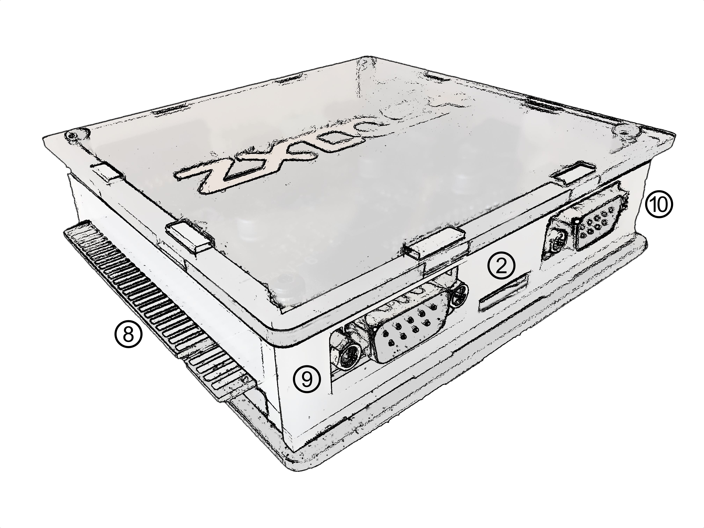
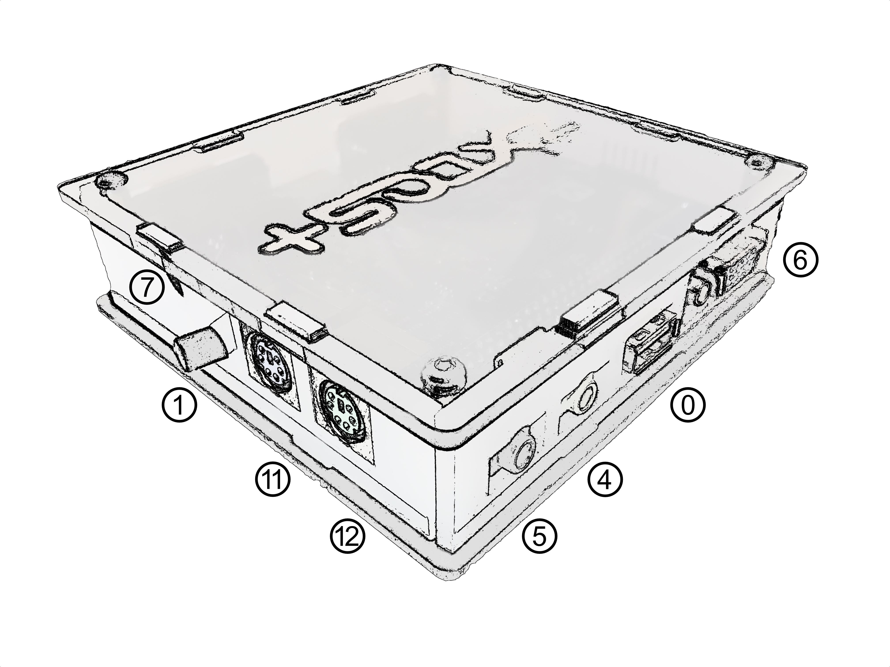
gomaDOS+
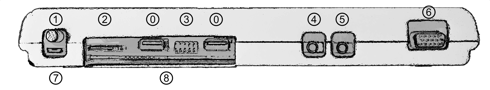
Descripción
1 |
Interruptor |
2 |
Ranura microSD |
3 |
JTAG y Joystick |
4 |
Salida de Sonido |
5 |
Entrada de Sonido |
6 |
Salida RGB/VGA |
7 |
Enchufe de Alimentación |
8 |
Puerto de expansión |
9 |
Puerto de Joystick Izquierdo |
10 |
Puerto de Joystick Derecho |
11 |
Puerto de Teclado PS/2 |
12 |
Puerto de Ratón PS/2 |
0 |
Puerto USB (PS/2) |
Configuración Inicial
Para poder poner en marcha un ZXDOS+ o gomaDOS+ hace falta, al menos, lo siguiente:
-
Un cargador USB, una TV u otro dispositivo que ofrezca alimentación USB
-
Un cable y un monitor VGA
-
Un teclado PS/2 (en el caso de ZXDOS+)
Para poder aprovechar todo su potencial, es útil tener también:
-
Una tarjeta microSD, no necesariamente muy grande
-
Unos altavoces de PC para conectar a la salida de audio, o un cable jack-stereo a dos conectores RCA rojo/blanco para conectar a la TV (opcional en gomaDOS+, ya que tiene beeper incorporado)
-
Un joystick norma Atari, como por ejemplo, un gamepad DB9 de Megadrive (se necesita el adaptador de joystick en el caso de gomaDOS+)
-
Un ratón PS/2 (se necesista adaptador PS/2 a USB en el caso de gomaDOS+)
-
Un cable con un jack estéreo de 3,5 mm en un extremo y los dos canales de sonido divididos en dos salidas mono en el otro, si se quiere usar algún dispositivo de reproducción y/o grabación de audio, como por ejemplo un Miniduino (ver la sección correspondiente más adelante), un PC/Mac/Raspberry PI, etc. o un reproductor/grabador de cassette. El canal derecho se utiliza como entrada (EAR) y el canal izquierdo se puede usar como salida de grabación (MIC).
Formato de la tarjeta microSD
Para poder utilizar una tarjeta microSD, esta debe tener, al menos, una partición (la primera en el caso de haber varias) en formato FAT16 o FAT32 (según el caso, se recomienda uno u otro formato para compatibilidad con distintos cores de terceros). Para el core de Spectrum, tambén es posible tener una primera partición en formato +3DOS y luego otra(s) en formato FAT16 o FAT32, para su uso con una ROM de +3e.
|
El tamaño máximo de una partición FAT16 son 4GB |
Windows
Para configuraciones sencillas, y tarjetas del tamaño adecuado (menos de 2GB para FAT16 o menos de 32GB para FAT32), se puede utilizar la herramienta de formato oficial de la SD Association.
Para otras configuraciones, y según la versión de sistema operativo de que se disponga, se podrá utilizar la herramienta de línea de comandos diskpart o bien la interfaz gráfica de administración de discos del sistema.
MacOS
Para configuraciones sencillas, y tarjetas del tamaño adecuado (menos de 2GB para FAT16 o menos de 32GB para FAT32), se puede utilizar la herramienta de formato oficial de la SD Association o la Utilidad de Discos incluida con el sistema operativo.
Para configuraciones más complejas, será necesario utilizar la línea de comandos.
Por ejemplo, en MacOS, para formatear una tarjeta con una única partición FAT16 (si la tarjeta es de 2GB o menos de tamaño), que figura como disk6 en la lista de dispositivos:
diskutil unmountDisk /dev/disk6
diskutil partitionDisk /dev/disk6 MBR "MS-DOS FAT16" ZXDOSPLUS RPara dividirla en dos particiones iguales (si la tarjeta es de 4GB o menos de tamaño):
diskutil unmountDisk /dev/disk6
diskutil partitionDisk /dev/disk6 MBR "MS-DOS FAT16" ZXDOSPLUS 50% "MS-DOS FAT16" EXTRA 50%Para crear dos primeras particiones FAT16 de 4GB (por ejemplo, para usar con el core de MSX) y usar el resto del espacio con otra más en formato FAT32 (para tarjetas de más de 8GB):
diskutil unmountDisk /dev/disk6
diskutil partitionDisk /dev/disk6 MBR %DOS_FAT_16% ZXDOSPLUS 4G %DOS_FAT_16% EXTRA 4G "MS-DOS FAT32" DATA R
sudo newfs_msdos -F 16 -v ZXDOSPLUS -c 128 /dev/rdisk6s1
sudo newfs_msdos -F 16 -v EXTRA -c 128 /dev/rdisk6s2|
El comando |
Para crear una partición FAT32 de 4GB (por ejemplo, para usar con el core de Amstrad CPC) y usar el resto del espacio con otra más en formato FAT32 (para tarjetas de más de 4GB de tamaño):
diskutil unmountDisk /dev/disk6
diskutil partitionDisk /dev/disk6 MBR "MS-DOS FAT32" ZXDOSPLUS 4G "MS-DOS FAT32" EXTRA RLinux
Existen multitud de herramientas en Linux que permiten formatear y particionar el contenido de una tarjeta SD (como fdisk, parted, cfdisk, sfdisk o GParted). Sólo se ha de tener en cuenta que el esquema de particiones a utilizar siempre ha de ser MBR, y la primera partición (la que se utilizará para esxdos) ha de ser primaria.
esxdos
esxdos es un firmware para la interfaz the DivIDE/DivMMC, que el ZXDOS+ implementa, y que permite el acceso a dispositivos de almacenamiento como la tarjeta microSD. Incluye comandos similares a los de UNIX, aunque para usarlos hay que precederlos con un punto, por ejemplo .ls, .cd, .mv, etc.
Para poder utilizarlo es necesario incluir los ficheros correspondientes en la primera partición de la tarjeta microSD.
En el momento de escribir este documento, la versión incluida con ZXDOS+ es la 0.8.6, y se puede descargar desde la página oficial en este enlace.
Una vez descargado y descomprimido, se han de copiar, a la raíz de la tarjeta, los directorios BIN, SYS y TMP con todo su contenido.
Si todo se ha hecho correctamente, al encender el core Spectrum de ZXDOS+ se verá cómo esxdos detecta la tarjeta y carga los componentes necesarios para funcionar.
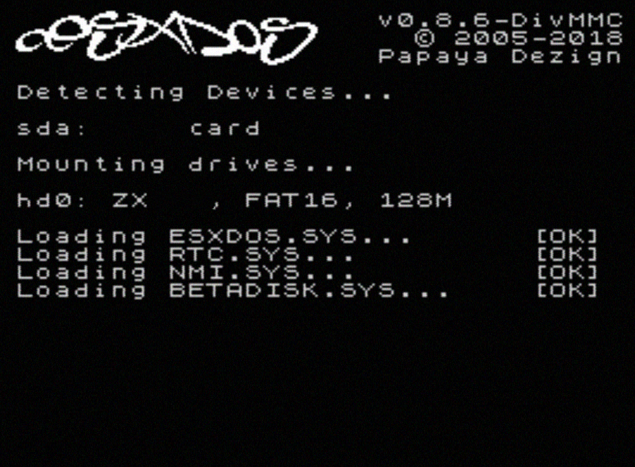
Es recomendable, además, añadir los comandos esxdos específicos para ZXDOS+. Estos se pueden obtener en la página con el código fuente del proyecto (aquí, aquí y aquí), y son los siguientes:
back16m backzx2 backzxd corebios dmaplayw esprst iwconfig joyconf keymap loadpzx playmid playrmov romsback romsupgr upgr16m upgrzx2 upgrzxd zxuc zxunocfg
Más adelante se explica lo que hace cada uno de ellos.
Modos de teclado en gomaDOS+
El teclado de gomaDOS+ al ser similar al teclado del ZX Spectrum original, carece de algunas de teclas existentes en un teclado moderno de PC. Internamente, el teclado de membrana está conectado a una placa Arduino, que se encarga de transformar las pulsaciones al protocolo PS/2 de teclado. Esta placa está programada de manera que pueda comportarse de distintas maneras según nos interese.
Por defecto, está configurado en modo ZX Spectrum. Para cambiar a otro modo, se debe pulsar Caps Shift+Symbol Shift+U y luego la tecla correspondiente. Al hacerlo, se tecleará automáticamente un texto indicando el modo seleccionado (por ejemplo: .zx si se pulsa Caps Shift+Symbol Shift+U y luego 0).
La siguiente tabla indica los distintos modos y la tecla de activación asociada:
| Modo | Tecla |
|---|---|
ZX Spectrum |
|
Amstrad CPC |
|
MSX |
|
Commodore 64 |
|
Atari 800XL |
|
BBC Micro |
|
Acorn Electron |
|
Apple (I y II) |
|
Commodore VIC 20 |
|
PC XT |
|
Oric Atmos |
|
SAM Coupé |
|
Jupiter ACE |
|
La distribución del teclado en modo ZX Spectrum, con la pulsación asociada al combinar junto con Caps Shift+Symbol Shift, se puede resumir según el siguiente esquema:
1 |
2 |
3 |
4 |
5 |
6 |
7 |
8 |
9 |
0 |
|
|
|
|
|
|
|
|
|
|
Q |
W |
E |
R |
T |
Y |
U |
I |
O |
P |
|
|
|
|||||||
A |
S |
D |
F |
G |
H |
J |
K |
L |
Enter |
|
|||||||||
CShift |
Z |
X |
C |
V |
B |
N |
M |
SShift |
Space |
|
|
|
|
Donde:
-
BlqDs:Bloq. Despl.cambia de modo video compuesto a VGA y viceversa (en el core de Next, se debe usarCaps Shift+Symbol Shift+2oF2) -
Guarda: Define el modo actual como el modo por defecto -
Vers: Muestra (teclea) la versión actual del firmware -
hRes: Hard Reset -
sRes: Soft Reset
La lista completa de combinaciones de teclado (y el modo en que se pueden utilizar) es la siguiente:
| Caps S.+Symbol S. | Modo | Acción |
|---|---|---|
1 |
Todos |
|
2 |
Todos |
|
3 |
Todos |
|
4 |
Todos |
|
5 |
Todos |
|
6 |
Todos |
|
7 |
Todos |
|
8 |
Todos |
|
9 |
Todos |
|
0 |
Todos |
|
Q |
Todos |
|
W |
Todos |
|
S |
C64 |
|
E |
Acorn/CPC |
|
R |
Acorn |
|
U |
Todos |
|
G |
ZX/MSX/C64 |
|
X |
Todos |
|
C |
PC |
|
V |
Todos |
|
B |
ZX |
|
N |
ZX |
|
BIOS
Si se pulsa la tecla F2 (Caps Shift+1 en gomaDOS+) durante el arranque, se tendrá acceso a la configuración de BIOS. El firmware de BIOS es el primer programa que se ejecuta cuando se enciende el ZXDOS+. El propósito fundamental del software de BIOS es iniciar y probar el hardware y cargar uno de los cores instalados.
Usando las teclas de cursor izquierda y derecha (Caps Shift+5 y Caps Shift+8 en gomaDOS+), se puede navegar por las pantallas de configuración de la BIOS. Con las teclas arriba y abajo (Caps Shift+7 y Caps Shift+6 en gomaDOS+) se pueden elegir los distintos elementos de cada pantalla y, con la tecla Enter, es posible activar y elegir las opciones de cada una de estas. La tecla Esc (Caps Shift+Espacio en gomaDOS+) sirve para cerrar las ventanas de opciones abiertas sin aplicar ninguna acción.
Main
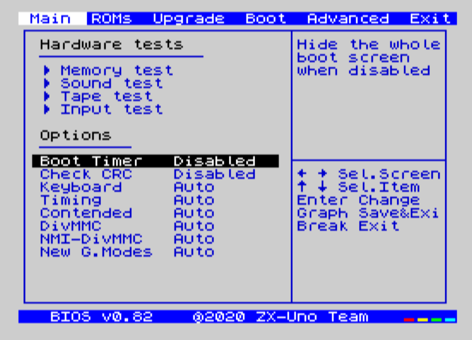
En la primera pantalla de configuración, además de poder ejecutar distintas pruebas, se puede definir el comportamiento por defecto para lo siguiente:
-
Espera en el arranque (Boot Timer): Indica el tiempo que está la pantalla de arranque disponible (o la oculta por completo)
-
Comprobar CRC de las ROMs (Check CRC): Para comprobar la integridad de las ROMs al cargarlas (más seguro) u omitirla (más rápido)
-
Tipo de teclado (Keyboard)
-
Timing: Para definir el comportamiento de la ULA (Modo 48K, Modo 128K, Modo Pentagon)
-
Contención de memoria (Contended)
-
DivMMC
-
Soporte NMI para DivMMC
-
Soporte para nuevos modos gráficos (ULAPlus, Timex, Radastan)
Se puede consultar información más tecnica en la Wiki de ZX-Uno.
ROMs

La segunda pantalla muestra las ROMs de ZX Spectrum instaladas y permite reordenar (Move Up, Move Down), renombrar (Rename) o borrar (Delete) cada una de ellas, así como elegir la que se cargará por defecto en el arranque (Set Active).
Upgrade
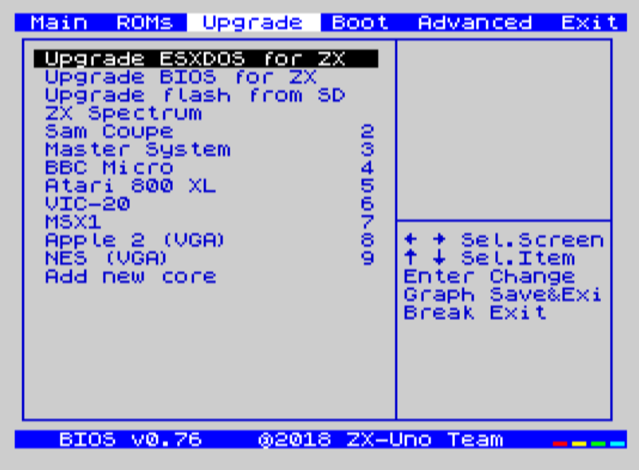
La pantalla Upgrade se utiliza para realizar las distintas actualizaciones del contenido de la memoria Flash: esxdos, BIOS, Cores, etc. (véase el apartado correspondiente a actualizaciones para más información).
Boot
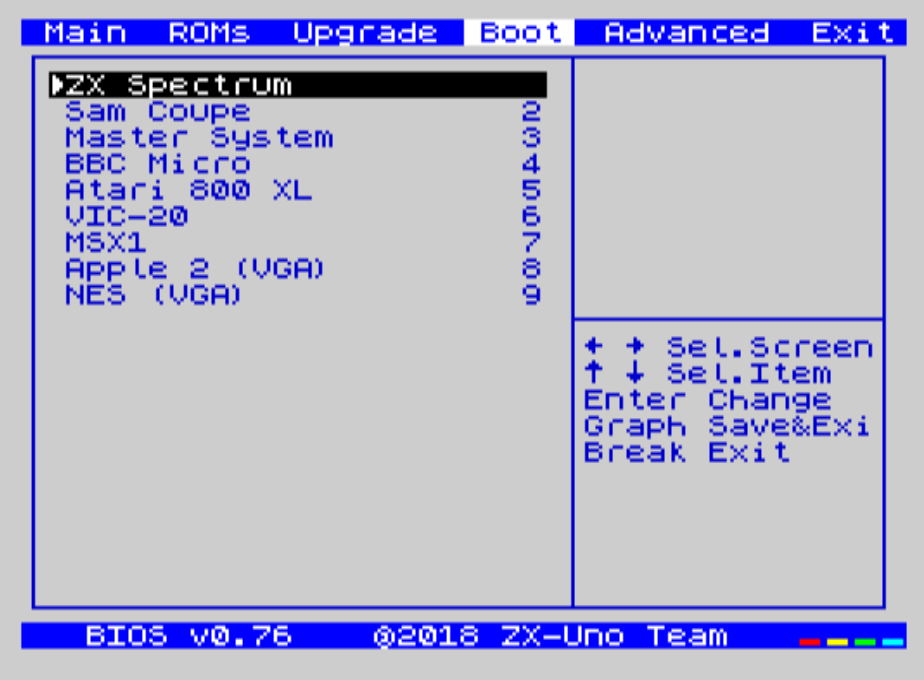
En la pantalla Boot se puede elegir qué core de los instalados se desea que cargue por defecto en el arranque.
Advanced
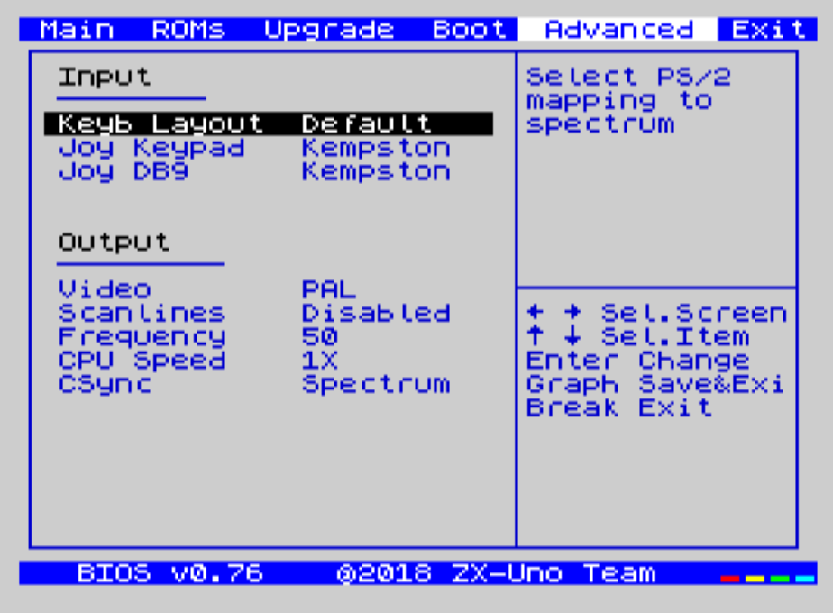
La pantalla de configuración avanzada sirve para modificar los siguientes ajustes:
-
Distribución del teclado (Keyb Layout): Ver el apartado correspondiente para más información)
-
Comportamiento del joystick emulado con el teclado numérico (Joy Keypad): Kempston, Sinclair Joystick 1, Sinclair Joystick 2, Protek o Fuller
-
Comportamiento de un joystick conectado al puerto (Joy DB9): Kempston, Sinclair Joystick 1, Sinclair Joystick 2, Protek, Fuller o simular las teclas
Q,A,O,P,EspacioyM -
Salida de vídeo (Video): PAL, NTSC o VGA
-
Simulación de línea de exploración (Scanlines): Activas (Enabled) o inactivas (Disabled)
-
Frecuencia horizontal de VGA (Frequency): 50, 51, etc.
-
Velocidad de la CPU: Normal (1x) o acelerada (2X, 3X, etc.)
-
Csync: Spectrum o PAL
Exit
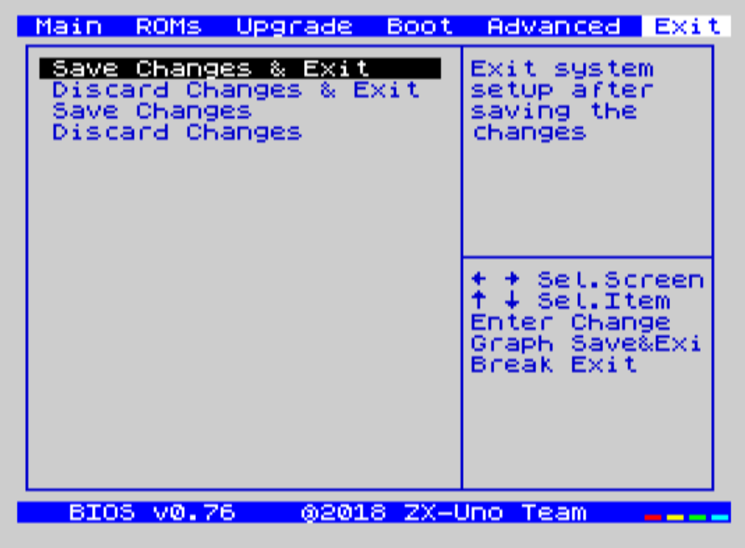
Finalmente, desde la última pantalla se puede:
-
Salir de la configuración de BIOS guardando los cambios (Save Changes & Exit)
-
Descartar los cambios y salir (Discard Changes & Exit)
-
Guardar los cambios sin salir (Save Changes)
-
Descartar los cambios (Discard Changes)
ZX Spectrum
El core principal es el que implementa un ordenador ZX Spectrum. Este core es especial, y no se puede sustibuir por otro que no sea de ZX Spectrum, ya que el ZXDOS+ lo utiliza para su funcionamiento.
Estas son algunas de sus principales características:
-
Implementación ZX Spectrum 48K, 128K, Pentagon y Chloe 280SE
-
ULA con modos ULAplus, Timex y modo Radastan (incluyendo scroll por hardware y grupo de paleta seleccionable)
-
Posibilidad de desactivar la contención de memoria (para compatibilidad con Pentagon 128)
-
Posibilidad de elegir el comportamiento del teclado (issue 2 o issue 3)
-
Posibilidad de elegir el timing de la ULA (48K, 128K o Pentagon)
-
Control del encuadre de pantalla configurable para tipo de timing, y posibilidad de elegir entre sincronismos originales de Spectrum o sincronismos estándar PAL progresivo.
-
Soporte de la MMU horizontal del Timex con bancos HOME, DOC y EXT en RAM.
-
Interrupción ráster programable en número de línea, para cualquier linea de TV.
-
Posibilidad de activar/desactivar los registros de manejo de bancos de memoria, para mejor compatibilidad con cada modelo implementado
-
Posibilidad de activar/desactivar los dispositivos incorporados al core para mejorar la compatibilidad con ciertos programas
-
Soporte ZXMMC para +3e y soporte DIVMMC para esxdos y firmwares compatibles
-
Soporte Turbo Sound
-
Soporte de SpecDrum
-
Cada canal A,B,C de los dos chips AY-3-8912, beeper y SpecDrum pueden dirigirse a las salidas izquierda, derecha, ambas o ninguna, permitiendo la implementación de configuraciones tales como ACB, ABC, etc.
-
Soporte de joystick real y joystick en teclado con protocolo Kempston, Sinclair 1 y 2, Cursor, Fuller y QAOPSpcM.
-
Soporte de modo turbo a 7MHz, 14MHz, 28MHz
-
Soporte de teclado con protocolo PS/2 y mapeado configurable por el usuario desde el propio Spectrum.
-
Soporte de ratón PS/2 emulando el protocolo Kempston Mouse.
-
Posibilidad de salida de video en modo de video compuesto, RGB 15kHz, o VGA.
-
Frecuencia de refresco vertical seleccionable por el usuario para mejorar la compatibilidad con monitores VGA.
-
Soporte de arranque multicore: desde el Spectrum se puede seleccionar una dirección de la SPI Flash y la FPGA cargará un core desde ahí.
Formato avanzado de la tarjeta microSD (+3e)
Una de las ROM que se pueden cargar con el core de ZX Spectrum es la de ZX Spectrum +3e, que es una versión mejorada del Sinclair ZX Spectrum +3, y que soporta el uso de discos duros o tarjetas de memoria.
El +3e usa su propio esquema de particionado (llamado IDEDOS) para dividir el disco duro en diferentes particiones donde se pueden almacenar datos. Se necesita una version 1.28 o superior de la ROM para poder compartir particiones IDEDOS con particiones MBR. En otro caso, se ha dedicar la tarjeta completa al particionado IDEDOS.
|
El esquema de particionado que se presentará a continuación sólo se podrá utilizar con el core de Spectrum. |
|
En IDEDOS, cada partición puede tener un tamaño entre 1 y 16 Megabytes (un millón de bytes), y cada disco puede tener entre 1 y 65535 particiones. Por tanto, lo máximo que se puede ocupar de una tarjeta será alrededor de 1GB de espacio. |
A continuación se explica una forma de dividir una tarjeta en dos o tres partes, con la primera partición IDEDOS (1GB de tamaño), la segunda FAT16 (4GB) y la tercera FAT32 (resto del espacio de la tarjeta).
En la segunda particion se puede instalar, tal y como se explicó anteriormente exsdos y otros programas.
Windows
Se puede utilizar el administrador de discos de Windows. Los pasos a seguir serían:
-
Eliminar todas las particiones de la tarjeta
-
Crear una partición extendida, del tamaño que se quiera utilizar para IDEDOS
-
Crear una partición primaria de 4GB y formatear como FAT16
-
Opcionalmente, crear otra partición primaria ocupando el resto del espacio y formatear como FAT32
MacOS
Será necesario utilizar la línea de comandos. Lo primero es determinar el disco a formatear:
diskutil listEn este ejemplo sería el disco 6:
(...)
/dev/disk6 (external, physical):
#: TYPE NAME SIZE IDENTIFIER
0: FDisk_partition_scheme *15.9 GB disk6
1: DOS_FAT_32 UNKNOWN 15.9 GB disk6s1Pasos a seguir:
-
Expulsar el disco y editar el esquema de particiones (el segundo paso requiere permisos de administrador):
diskutil unmountDisk /dev/disk6
sudo fdisk -e /dev/rdisk6fdisk: could not open MBR file /usr/standalone/i386/boot0: No such file or directory
Enter 'help' for information
fdisk: 1> erase
fdisk:*1> edit 1
Partition id ('0' to disable) [0 - FF]: [0] (? for help) 7F
Do you wish to edit in CHS mode? [n]
Partition offset [0 - 31116288]: [63] 128
Partition size [1 - 31116287]: [31116287] 2017152
fdisk:*1> edit 2
Partition id ('0' to disable) [0 - FF]: [0] (? for help) 06
Do you wish to edit in CHS mode? [n]
Partition offset [0 - 31116288]: [2017280]
Partition size [1 - 29099135]: [29099135] 7812504
fdisk:*1> flag 2fdisk:*1> edit 3
Partition id ('0' to disable) [0 - FF]: [0] (? for help) 0B
Do you wish to edit in CHS mode? [n]
Partition offset [0 - 31116288]: [9829784]
Partition size [1 - 21286504]: [21286504]
fdisk:*1> print
Starting Ending
#: id cyl hd sec - cyl hd sec [ start - size]
------------------------------------------------------------------------
1: 7F 1023 254 63 - 1023 254 63 [ 128 - 2017152] <Unknown ID>
2: 06 1023 254 63 - 1023 254 63 [ 2017280 - 7812504] DOS > 32MB
3: 0B 1023 254 63 - 1023 254 63 [ 9829784 - 21286504] Win95 FAT-32
4: 00 0 0 0 - 0 0 0 [ 0 - 0] unused
fdisk:*1> write
fdisk: 1> quit-
Formatear las particiones FAT (requiere permisos de administrador)
diskutil unmountDisk /dev/disk6
sudo newfs_msdos -F 16 -v ZXDOSPLUS -c 128 /dev/rdisk6s2
sudo newfs_msdos -F 32 -v EXTRA -b 4096 -c 128 /dev/rdisk6s3-
Comprobar cómo el esquema de particiones ha cambiado y ya es el que se deseaba:
diskutil list(...)
/dev/disk6 (external, physical):
#: TYPE NAME SIZE IDENTIFIER
0: FDisk_partition_scheme *15.9 GB disk6
1: 0x7F 1.0 GB disk6s1
2: DOS_FAT_16 ZXDOSPLUS 4.0 GB disk6s2
3: DOS_FAT_32 EXTRA 10.9 GB disk6s3Linux
Será necesario utilizar la línea de comandos. Lo primero es determinar el disco a formatear:
lsblkEn este ejemplo sería sdc:
NAME MAJ:MIN RM SIZE RO TYPE MOUNTPOINT
(..)
sdc 179:0 0 15,8G 0 disk
└─sdc1 179:1 0 15,8G 0 partPasos a seguir:
-
Comprobar que no está montado y editar el esquema de particiones (este paso requiere permisos de root):
sudo fdisk -e /dev/sdcEnter 'help' for information
fdisk: 1> erase
fdisk:*1> edit 1
Partition id ('0' to disable) [0 - FF]: [0] (? for help) 7F
Do you wish to edit in CHS mode? [n]
Partition offset [0 - 31116288]: [63] 128
Partition size [1 - 31116287]: [31116287] 2017152
fdisk:*1> edit 2
Partition id ('0' to disable) [0 - FF]: [0] (? for help) 06
Do you wish to edit in CHS mode? [n]
Partition offset [0 - 31116288]: [2017280]
Partition size [1 - 29099135]: [29099135] 7812504
fdisk:*1> flag 2
fdisk:*1> edit 3
Partition id ('0' to disable) [0 - FF]: [0] (? for help) 0B
Do you wish to edit in CHS mode? [n]
Partition offset [0 - 31116288]: [9829784]
Partition size [1 - 21286504]: [21286504]
fdisk:*1> print
Starting Ending
#: id cyl hd sec - cyl hd sec [ start - size]
------------------------------------------------------------------------
1: 7F 1023 254 63 - 1023 254 63 [ 128 - 2017152] <Unknown ID>
2: 06 1023 254 63 - 1023 254 63 [ 2017280 - 7812504] DOS > 32MB
3: 0B 1023 254 63 - 1023 254 63 [ 9829784 - 21286504] Win95 FAT-32
4: 00 0 0 0 - 0 0 0 [ 0 - 0] unused
fdisk:*1> write
fdisk: 1> quit-
Formatear las particiones FAT (requiere permisos de root)
sudo mkfs.fat -F 16 /dev/sdc2
sudo mkfs.fat -F 32 /dev/sdc3-
Verificar que el esquema de particiones ha cambiado y ya es el que se quería:
lsblkNAME MAJ:MIN RM SIZE RO TYPE MOUNTPOINT
(...)
sda 179:0 0 15,8G 0 disk
├─sda1 179:1 0 1G 0 part
├─sda2 179:2 0 4G 0 part
├─sda3 179:3 0 10,8G 0 part+3e
Una vez preparada la tarjeta para su uso, se puede arrancar el core de Spectrum con una ROM de +3e, y formatear la parte de IDEDOS según se desee.
El primer paso consiste en determinar la geometría de la microSD. Con la tarjeta insertada en el ZXDOS+, desde el core de Spectrum con la ROM de +3e, ejecutar el comando:
CAT TABEsto devoverá un resultado indicando el número de cilindros, cabezales y sectores.
Teniendo esto en cuenta, calculamos el espacio que ocupa nuestra partición, en cilindros. Por ejemplo, si el número de cilindros obtenido es de 32768, y queremos utilizar 1GB de una tarjeta de 16GB, el número de cilindros que se necesitarían son 32768/16=2048. Por tanto, podemos formatear la partición IDEDOS usando ese número:
FORMAT TO 0,100,2048El primer valor (0) indica el disco a utilizar (el primero), el segundo valor es el número máximo de particiones IDEDOS que se podrán usar, y el tercer valor es el número de cilindros a utilizar.
Una vez hecho el formato, ya será posible crear nuevas particiones. Por ejemplo, para crear una partición llamada "Software" de 16MB, una llamada "Swap1", de 4MB (para usar como espacio swap) y otra llamada "Utils" de 8MB:
NEW DATA "Software",16
NEW EXP "Swap1",4
NEW DATA "Utils",8Para más información sobre el uso de los distintos comandos de +3e para acceso al disco, se puede visitar esta página en World of Spectrum.
Teclado
El mapa de teclado (asignación de las teclas físicas del teclado con las pulsaciones que se presentan a los distinto cores) se cambia desde el menú Advanced de la BIOS. Existen tres mapas distintos a elegir: Español (por defecto), inglés, y Spectrum (avanzado).
También se puede cambiar con la utilidad keymap. Dentro de /bin hay que crear un directorio llamado keymaps y ahí copiar los mapas de teclado se desee usar. Por ejemplo, para cambiar al mapa US hay que escribir .keymap us desde esxdos.
Para que el mapa se conserve después de un master reset, hay que tener seleccionado Default en la configuración de BIOS.
Para más información, consultar este mensaje en el foro de ZX-Uno.
Español
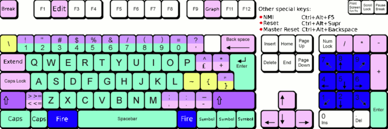
Inglés
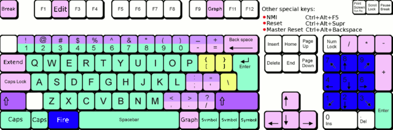
Spectrum

Teclas especiales y botones
Las combinaciones específicas de gomaDOS+ que se indican a continuación se corresponden con el modo de teclado ZX. Véase el apartado dedicado a los modos de teclado de gomaDOS+ para más información. También se pueden utilizar las equivalentes en el modo de teclado PC XT (Por ejemplo, Caps Shift+Symbol Shift+2 en vez de Caps Shift+1).
Teclas especiales durante el arranque:
-
F2(Caps Shift+1en gomaDOS+) Entrar en la BIOS -
Bloq. MayúsoCursor abajo(Caps Shift+2en gomaDOS+) o, si hay un joystick conectado, pulsar la dirección hacia abajo: Menú de selección de cores -
Esc(Caps Shift+Espacioen gomaDOS+) o, si hay un joystick de dos o más botones conectado, pulsar el botón de disparo 2: Menú de selección de ROMS del core de ZX Spectrum -
R: Carga la rom del core de ZX Spectrum en modo "real" deshabilitando esxdos, nuevos modos gráficos, etc. -
/(del teclado numérico,Symbol Shift+Ven gomaDOS+): Carga la ROM por defecto del core de ZX Spectrum en modo "root" -
Número del
1al9: Cargar el core en la ubicación de la Flash correspondiente a dicho número
Teclas especiales que se pueden utilizar durante la ejecución del core principal (ZX Spectrum):
-
Esc(Caps Shift+Espacioen gomaDOS+): BREAK -
F2(Caps Shift+1en gomaDOS+): Edit -
F5(Caps Shift+Symbol Shift+5en gomaDOS+): NMI -
F7(Caps Shift+Symbol Shift+7en gomaDOS+): Reproducir o Pausa en la reproducción de archivos .PZX -
F8(Caps Shift+Symbol Shift+8en gomaDOS+): Rebobinar el archivo .PZX hasta la marca anterior -
F10(Caps Shift+9en gomaDOS+): Graph -
F12(Caps Shift+Symbol Shift+Wen gomaDOS+): Turbo Boost. Pone a la CPU a 28MHz mientras se mantenga pulsada (a partir del core EXP27). -
Ctrl+Alt+Backspace(Caps Shift+Symbol Shift+Ben gomaDOS+): Hard reset. Backspace es la tecla de borrar hacia atrás, encima deEnter. -
Ctrl+Alt+Supr(Caps Shift+Symbol Shift+Nen gomaDOS+): Soft reset. -
Bloq. Despl.(Caps Shift+Symbol Shift+Gen gomaDOS+): cambia de modo video compuesto a VGA y viceversa.
ROMs
El core de ZX Spectrum tiene la capacidad de inicializar utilizando diferentes versiones de ROM (48K, 128K, Plus 2, etc.). Estas se almacenan en la memoria flash del ZXDOS+, y se puede elegir cuál cargar, pulsando la tecla Esc (Caps Shift+Espacio en gomaDOS+) durante el arranque. También es posible definir desde la configuración de BIOS, cuál es la ROM que se desea que se cargue por defecto.
Véase el apartado de actualizaciones para más información sobre cómo ampliar o modificar las ROMs almacenadas en la memoria flash.
DerbyPro
DerbyPro o Derby++ es una ROM mejorada para el ZX Spectrum, basada en la versión 1.4 de la ROM de desarrollo Derby. El Spectrum 128 (nombre en código "Derby") fue una máquina española, encargada por Investronica y lanzada en 1985. Incluía un teclado aparte que añadía varias teclas de edición extra. En 1986 se lanzó la versión para Reino Unido con una versión simplificada de 128 BASIC y sin teclado extra. Derby++ se basa en la ROM española para incluir lo mejor de las dos versiones, sin sus inconvenientes, y con soporte para nuevo hardware.
Se puede descargar la ROM, un manual de usuario y otos ficheros del grupo púbilco oficial de Facebook.
Puesto que se trata de una ROM de 64K con soporte para nuevo hardware, se pueden usar estas opciones al añadirla a la SPI flash:
| Ajuste | Significado |
|---|---|
|
Habilitar DivMMC |
|
Habilitar NMI DivMMC (menú de esxdos) |
|
Usar timings de 128K |
CargandoLeches
CargandoLeches es un conjunto de ROMs de ZX Spectrum originalmente pensadas para cargar juegos a una velocidad de 15 a 20 veces superior a lo normal. En lugar de una cinta se requiere una fuente de audio digital como un ordenador, un dispositivo móvil, un reproductor MP3, etc. También tiene una rutina que detecta el método de carga y si no se trata de una carga ultrarápida, ejecuta el código de la ROM original. En cargas que no sean CargandoLeches no se nota por tanto la diferencia entre usar esta ROM y la ROM original.
Desde la versión 2.0, el proyecto pasó de ser una única ROM a varias, cada una con distintas opciones. Así, es posible elegir diferentes combinaciones que pueden incluir:
-
Carga ultrarrápida
-
Reset & Play (es decir, que al hacer un reset automáticamente se ponga en modo carga de cinta)
-
Introducción de POKEs
-
Desactivar o activar la expansión de tokens (palabras clave) de Sinclair BASIC
El conjunto completo de ROMs está disponible para descargar desde el repositorio en GitHub aquí.
Dependiendo de la ROM elegida, los ajustes a indicar cuando se añada a la SPI flash pueden variar. Por ejemplo, para la ROM 48le_ea_re_po (que tiene habilitadas todas las opciones), se pueden usar estos ajustes (no hay que habilitar NMI DivMMC porque el editor de POKEs ya lo utiliza):
| Ajuste | Significado |
|---|---|
|
Habilitar DivMMC |
|
Deshabilitar bit alto de ROM (bitd 2 de 1FFD) |
|
Deshabilitar bit bajo de ROM (bit 4 de 7FFD) |
|
Deshabilitar modo Timex |
POKEs
En el caso de usar una ROM con la opción de introducir POKEs, se hace de la siguiente manera:
-
Una vez el juego ha cargado, pulsando NMI (
F5oCaps Shift+Symbol Shift+5en gomaDOS+), aparecerá un campo en la parte superior izquierda de la pantlla -
Escribir la dirección del POKE a introducir y pulsar
Enter -
Escribir el valor del POKE y pulsar
Enter -
Repetir los pasos 2. y 3. todas las veces que se desee. Para terminar y volver al juego, pulsar
Enterdos veces seguidas
Preparación de cintas de carga ultrarrápida
Las ROMs con la opción de carga ultrarrápida necesitan archivos de cinta especiales que se generan desde ficheros TAP de carga normal, de juegos que no tengan protección de carga o modo turbo.
Para crear una cinta de carga ultrarrápida se necesitan las utilidates de línea de comandos leches y CgLeches. Estas se pueden conseguir, para Windows, en el repositorio oficial. Para MacOS es posible descargar una versión no oficial en este otro repositorio.
En otro caso, es posible compilar desde el código fuente disponible en el repositorio oficial. Por ejemplo, para compilar en Linux usando gcc basta con usar estos comandos:
gcc leches.c -o leches
gcc CgLeches.c -o CgLechesPara generar una cinta de carga ultarrápida se ha de invocar desde una consola al comando CgLeches indicando, al menos, el fichero TAP de origen, y el fichero (WAV o TZX) de destino. Existen otros parámetros como el nivel de velocidad de la carga, entre 0 y 7 (donde 0 es la más rápida pero posiblemente más incompatible), si se desea un fichero mono, estéreo, etc. (en el caso de WAV) y más.
Así, para producir un fichero WAV de audio con una cinta de carga ultrarrápida desde el fichero de cinta Valley.tap con velocidad de carga 5, se haría así:
(...) CgLeches Valley.tap Valley.wav 5Ahora el fichero Valley.wav se puede reproducir desde un ordenador u otro dispositivo y cargarlo usando la ROM (véase la sección dedicada a la carga desde cinta para más detalles).
Otras ROMs
Estos son algunos ajustes válidos para añadir a la SPI flash algunas otras ROM personalizadas:
| Nombre de la ROM | Ajustes |
|---|---|
Gosh Wonderful ROM v1.33 |
dnhl17x |
Looking Glass 1.07 |
dnhl17x |
ZX82 by Daniel A. Nagy |
dnhl17 |
ZX85 by Daniel A. Nagy |
dntmh1 |
Arcade Game Designer 0.1 |
thl17x |
esxdos
Guía básica
Existen dos tipos diferentes de comandos de esxdos, los llamados comandos "DOT", que, como su nombre indica, comienzan por un punto, y las extensiones de la funcionalidad de comandos existentes en BASIC.
Los principales comandos "DOT" commands son los siguientes:
-
128: Para pasar al modo 128K desde el modo 48K. -
cd: Cambiar el directorio actual de trabajo. -
chmod: cambiar los atributos de los ficheros de la tarjeta SD. -
cp: Copiar un archivo. -
divideo: Reproduce un archivo de video DivIDEo (.DVO). -
drives: Mostrar las unidades disponibles. -
dskprobe: Utilidad para ver el contenido a bajo nivel de un dispositivo de almacenamiento. -
dumpmem: Permite volcar contenido de la memoria RAM a un fichero. -
file: Intenta determinar el tipo de un fichero por su contenido (como el comando de UNIX). -
gramon: Monitor para buscar gráficos, sprites, fuentes de texto, etc. en la memoria RAM. -
hexdump: Muestra el contenido de un fichero usando notación hexadecimal. -
hexview: Permite ver y navegar por el contenido de un fichero usando notación hexadecimal. -
launcher: Crea un atajo (launcher) para abrir directamente un fichero TAP. -
ls: Ver el contenido de un directorio. -
lstap: Ver el contenido de un fichero .TAP -
mkdir: Crear un directorio. -
mktrd: Crear un fichero imagen de disquete .TRD -
more: Ver el contenido de un archivo de texto. -
mv: Mover un archivo. -
partinfo: Muestra información sobre las particiones de un dispositivo de almacenamiento. -
playpt3: Reproducir un archivo musical .PT3. -
playsqt: Reproducir un archivo musical .SQT. -
playstc: Reproducir un archivo musical .STC. -
playtfm: Reproducir un archivo musical .TFC. -
playwav: Reproducir un archivo de audio .WAV. -
rm: Borrar un archivo o directorio. -
snapload: Carga ficheros snapshot. -
speakcz: Reproduces texto usando pronunciación checa. -
tapein: Montar un archivo .TAP para poder ser utilizado luego desde BASIC con la sentencia LOAD -
tapeout: Montar un archivo .TAP para poder ser utilizado luego desde BASIC con la sentencia SAVE -
vdisk: Monta una unidad de disquete .TRD para usar en el entorno TR-DOS (Una vez montadas todas las unidades deseadas, se puede entrar en el emulador de TR-DOS escribiendo:RANDOMIZE USR 15616)
Algunos comandos extendidos de BASIC son:
-
GO TOpara cambiar de unidad y/o directorio (ej:GO TO hd1oGO TO hd0"juegos") -
CATpara mostrar el contenido de una unidad -
LOADpara cargar un fichero desde una unidad (programa en BASIC, pantalla, código, etc. por ejemploLOAD *"Pantalla.scr" SCREEN$) -
SAVEpara guardar datos en un fichero (Ej:SAVE *"Programa.bas") -
ERASEpara borrar un fichero
Además, esxdos incluye un gestor NMI, es decir, una aplicación que se carga cuando se pulsa NMI (F5) y que facilita la navegación por la tarjeta microSD y la carga de algunos tipos de archivo (TAP, Z80, TRD, etc.). Pulsando la tecla "H" se accede a una pantalla de ayuda, en la que se indican todas las teclas disponibles.
|
El gestor de esxdos muestra las entradas de archivos y directorios en el orden de la tabla FAT interna, y no de manera alfabética. Si se desea ver esta información ordenada, se debe reorganizar la estructura de la tarjeta con una utilidad como FAT Sorter para Windows, FATsort para Linux y MacOS, YAFS, SDSorter u otros. |
Comandos para ZXDOS+
Tal y como se ha explicado en la parte de instalación, existe una serie de comandos que son exclusivos para ZXDOS+, y que se describen a continuación:
-
back16m: Copia a un ficheroFLASH.ZX1en el directorio raíz de la tarjeta SD el contenido de una memoria SPI Flash de 16 megas. Se debe ejecutar desde una ROM en modo "root". Tras terminar su ejecución hay que ejecutar el comando.lspara que se termine de grabar la cache en la tarjeta. -
backzx2obackzxd: Genera un ficheroFLASH.ZX2oFLASH.ZXDen el directorio raíz de la tarjeta SD el contenido de una memoria SPI Flash de 32 megas. Se debe ejecutar desde una ROM en modo "root". Cuando termine hay que ejecutar el comando.lspara que se termine de grabar la cache en la tarjeta microSD. Si no se hace, la longitud del archivo se quedará en 0 de forma errónea. -
corebios: Para hacer una actualización conjunta del core de ZX Spectrum y de la BIOS. -
dmaplayw: Reproduce un archivo de audio .WAV, que debe ser de 8 bits, sin signo y muestreado a 15625 Hz. -
esprst: Resetea el módulo WiFi ESP8266(ESP-12). -
iwconfig: Configura el módulo WiFi. -
joyconf: Configura y prueba los joysticks de teclado y DB9. -
keymap: Sirve para cargar una definición de teclado diferente. -
loadpzx: Para cargar un archivo de imagen de cinta .PZX. -
playmid: Reproduce archivos musicales .MID en el addon MIDI. -
playrmov: Reproduce videos en formato radastaniano (ficheros.RDM). Este comando no funciona en modo 48K. -
romsback: Copia a un fichero RomPack, llamadoROMS.ZX1, en el directorio raíz de la tarjeta microSD todas las ROMS del core ZX Spectrum almacenadas en la memoria SPI Flash. Sólo funciona correctamente en ZX-Uno y ZXDOS (no utilizar en ZXDOS+ o gomaDOS+). Se debe ejecutar desde una ROM en modo "root". -
romsupgr: Copia el contenido de un fichero RomPack, llamadoROMS.ZX1, en el directorio raíz de la tarjeta microSD con todas las ROMS para el core ZX Spectrum a la memoria SPI Flash. Se debe ejecutar desde una ROM en modo "root". -
upgr16m: Copia el contenido de un ficheroFLASH.ZX1en el directorio raíz de la tarjeta SD a una memoria SPI Flash de 16 megas. Se debe ejecutar desde una ROM en modo "root". -
upgrzx2oupgrzxd: Copia el contenido de un ficheroFLASH.ZX2oFLASH.ZXDa una memoria SPI Flash de 32 megas.Versión del comando upgrade exclusivo para memorias SPI Flash de 32 Megas. Se debe ejecutar desde una ROM en modo "root". -
zxuc: Configura todas las opciones de la BIOS, permitiendo grabar en la microSD las opciones seleccionadas en archivos de configuración que pueden posteriormente ser cargados. -
zxunocfg: Configura determinados aspectos del funcionamiento del ZX-Uno como los timings, la contención, el tipo de teclado, la velocidad de la CPU, el tipo y frecuencia vertical del vídeo.
Wi-Fi
Todos los gomaDOS+, y algunos modelos de ZXDOS+, tienen incorporado un módulo ESP-12 con un chip Wi-Fi ESP8266, que se puede utilizar fácilmente con un core de ZX Spectrum (por ejemplo, el core EXP27 160820) que tenga sintetizado un dispositivo UART, que permite la comunicacion con el módulo.
Para configurar de forma básica el acceso al módulo, existen dos comandos "DOT" que se pueden obtener desde el repositorio oficial en GitHub:
-
esprst, que sirve para reiniciar el módulo -
iwconfig, que se utiliza para indicar el identificador (SSID) y la contraseña de la red Wi-Fi a la que conectarse, que quedarán almacenados en el fichero/sys/config/iw.cfgpara que puedan usarlos otros programas.
Por ejemplo:
.iwconfig miwifi miclavedeaccesoNetwork tools for ZX-Uno pack
Se trata de un conjunto de programas, desarrollados por Nihirash y que se pueden descargar de su web.
-
netman: Utilidad sencilla para configurar la conexión Wi-Fi para el resto de programas. No funciona en modo 48K. -
uGophy: Cliente de Gopher. No funciona en modo 48K. -
irc: Cliente de Internet Relay Chat. Funciona mejor a 14 Mhz. -
wget: Utilidad para descargar ficheros vía HTTP (no funciona con HTTPS). -
platoUNO: Cliente de PLATO. También funciona mejor a 14 Mhz. Para más información sobre el uso moderno de PLATO, es interesante la web de IRATA.ONLINE.
FTP-Uno
Cliente de FTP desarrollado por Yombo, disponible en GitHub.
Para utilizarlo, se deben seguir los siguientes pasos:
-
Editar el archivo
FTP.CFGcon los datos necesarios (Wi-Fi, servidor FTP al que conectar, etc.) -
Copiar
FTP.CFGen/SYS/CONFIG/en la tarjeta microSD -
Copiar también
ftpUno.tapal lugar que desee de la tarjeta -
Iniciar el ZXDOS+ y cargar el archivo de cinta
ftpUno.tap
UART Terminal
Se trata de un programa de ejemplo incluido con la biblioteca de funciones C ZXYLib desarrollada por yombo, y que permite enviar directamente pulsaciones de teclado a través del UART, y ver el resultado. Se puede descargar en este enlace.
Una vez copiado el fichero de cinta UARTTERM.tap y cargado, se pueden teclear distintos comandos específicos para el chip ESP8266. Por ejemplo:
-
AT. Para verificar si hay comunicación con el chipo. El resultado normal, si todo está bien, seríaOK -
AT+RST. Para reiniciar el chip. Es exactamente lo mismo que hace el comandoesprst -
AT+GMR. Para ver información relativa al chip, versión de firmware instalado, etc -
AT+CWMODE_CUR=1. Para configurar el chip en modo cliente Wi-Fi de forma temporal, hasta el próximo reinicio -
AT+CWMODE_DEF=1. Para configurar el chip en modo cliente Wi-Fi y guardar el ajuste como opción por defecto -
AT+CWJAP_CUR="<RedWiFi>","<ContraseñaWiFi>", donde<RedWiFi>es el ID de a red Wi-Fi donde conectar, y<ContraseñaWiFi>la contraseña de acceso, conecta temporalente a la red indicada -
AT+CWJAP_DEF="<RedWiFi>","<ContraseñaWiFi>", conecta a la red indicada, y la guarda como red por defecto en la memoria del chip -
AT+CWAUTOCONN=1configura el chip para conectarse a la red Wi-Fi por defecto al encenderse (AT+CWAUTOCONN=0desactiva esta opción)
Se pueden consultar todos los comandos disponibles en la documentación oficial del fabricante.
Creación de vídeos RDM (RaDastan Movie)
El comando PLAYRMOV reproduce videos en formato radastaniano. Para poder convertir nuestros propios vídeos, se debe obtener la utilidad makevideoradas desde el Repositorio SVN.
En el caso de Windows, en el propio repositorio hay un ejecutable (makevideoras.exe) ya preparado. Para Linux o MacOS, será necesario tener las herramientas de desarrollo correspondientes y compilarlo.
gcc makevideoradas.c -o makevideoradasUna vez dispongamos de makevideoradas, necesitaremos otras dos herramientas: ffmpeg e imagemagick. Estas se pueden instalar con el gestor de paquetes corespondiente (apt, yum, pacmam, brew, etc.) o descargando el código fuente y compilándolo también.
Ahora, el primer paso para convertir nuestro vídeo (por ejemplo, mivideo.mp4), es exportar los fotogramas como imágenes BMP de 128x96 píxeles de tamaño. Crearemos un directorio temporal (img en este ejemplo), donde guardar dichas imágenes.
mkdir img
(...)/ffmpeg -i mivideo.mp4 -vf "scale=128:96,fps=25" -sws_flags lanczos -sws_dither ed -pix_fmt rgb4 -start_number 0 img/output%05d.bmpAhora transformaremos los ficheros BMP a BMP (v3) de 16 colores.
(...)/magick mogrify -colors 16 -format bmp -define bmp:format=bmp3 img/*.bmpFinalmente, creamos el fichero .RDM (en este ejemplo mivideo.rdm) y borramos las imágenes y el directorio temporal.
(...)/makevideoradas img/output
mv img/output.rdm ../mivideo.rdm
rm -rf imgEn este hilo del foro Zona de Pruebas hay más información sobre todo este proceso.
Actualizaciones
BIOS
Para actualizar BIOS se ha de obtener un fichero llamado FIRMWARE.ZX2 (para un ZXDOS+ con placa FPGA LX16) o FIRMWARE.ZXD (para un ZXDOS+ con placa FPGA LX25). La última versión de los ficheros de firmware se puede descargar desde el repositorio oficial
|
Actualizar el firmware (BIOS) es delicado, no se debe hacer si no es necesario. En el caso de hacerlo, procurar que el ZXDOS+ tenga alimentación ininterumpida (como un SAI o un USB de portatil con batería). |
Copiar el fichero en la raíz de la tarjeta MicroSD, encender y pulsar F2 para entrar en la BIOS, seleccionar Upgrade, elegir "Upgrade BIOS for ZX", y luego "SDfile". El sistema leerá el fichero FIRMWARE… y avisará cuando esté actualizado.
ROMs
La memoria flash del ZXDOS+ dispone de 64 "slots", de 16K cada uno, para almacenar imágenes ROM de ZX Spectrum y compatibles. Así, la ROM del ZX Spectrum original (16K) ocuparía un slot del almacenamiento, la del ZX Spectrum 128K (32K) ocuparía dos slots, y la del ZX Spectrum +2A (64K) ocuparía 4 slots.
Se puede añadir una nueva ROM desde la pantalla ROMs de la BIOS, pulsando la tecla N, conectando un cable de audio a la entrada de sonido de la placa, y reproduciendo una cinta de carga de ROM. Las cintas de carga de ROM se pueden crear desde un archivo .tap generado con la utilidad GenRom, disponible en el repositorio de código de ZX-Uno.
Para actualizar las ROM instaladas para ZX Spectrum de forma masiva, se ha de obtener un fichero RomPack con el nombre ROMS.ZX1, y se tiene que copiar en la tarjeta MicroSD. Arrancar el ZXDOS+ usando una ROM en modo "root", y entonces bastará con introducir el comando .romsupgr. Esto grabará todas las ROM, que quedarán disponibles para su uso.
|
Recordar que, si se inicia el ZXDOS+ pulsando la tecla |
Para hacer el proceso contrario (guardar las ROMs en un fichero RomPack llamado ROMS.ZX1), se puede usar el comando .romsback.
|
La versión actual de |
Los ficheros RomPack se pueden editar fácilmente con la utilidad ZX1RomPack. Aunque es un programa de Windows, funciona perfectamente, por ejemplo, usando Wine o programas similares, tanto en MacOS como en Linux.
Cores
Hay un número de espacios disponibles para almacenar cores (el número depende del tamaño de la SPI Flash del modelo de ZXDOS), estando reservado el primer espacio para el de ZX Spectrum principal (esto no impide tener más cores de ZX Spectrum en otros espacios además del primero).
Los cores oficiales están disponibles para descargar en el repositorio en GitHub.
Para actualizar o instalar un nuevo core hay varias alternativas.
La forma más sencilla consiste en obtener la última versión del fichero que lo define, que será un fichero que hay que llamar COREnn.ZX2 (para un ZXDOS+ con placa FPGA LX16) o COREnn.ZXD (para un ZXDOS+ con placa FPGA LX25), donde nn es el número de espacio donde realizar la instalación (por ejemplo CORE2.ZX2 o CORE2.ZXD para el espacio 2).
|
A partir de la version 0.80 de BIOS, los ficheros se nombran usando la convención |
Copiar el fichero en la raíz de la tarjeta microSD, encender y pulsar F2 para entrar en la BIOS. Elegir Upgrade, seleccionar la fila correspondiente al número de core elegido (por ejemplo, la 2 – justo después de la de Spectrum), pulsar enter y luego "SD file". El sistema leerá el fichero COREnn… y avisará cuando esté actualizado, aunque antes preguntará el nombre (con el que se verá en la lista para elegir en el arranque y en el listado de la BIOS). Una vez instalado, se podrá utilizar al arrancar.
|
La actualización del core de ZX Spectrum es exactamente igual que los otros cores, pero en lugar del fichero |
esxdos
Para actualizar esxdos a una nueva versión, se ha de obtener la distribución desde la página oficial.
Una vez descargado y descomprimido, se ha de copiar, a la raíz de la tarjeta, el contenido de los directorios BIN y SYS sobreescribiendo los existentes (para preservar los comandos exclusivos de ZXDOS+).
Copiar ESXMMC.BIN (o ESXMMC.ROM, según la versión) en la raíz de la tarjeta microSD.
Iniciar el ZXDOS+ con la tarjeta insertada y pulsar F2 para acceder a la configuración de BIOS. Seleccionar el menú Upgrade y elegir "Upgrade esxdos for ZX". En el diálogo que aparece elegir "SD file" y, cuando pregunte "Load from SD" contestar "Yes" a la pregunta "Are you sure?". Se leerá el contenido del fichero ESXDOS…, se grabará en la flash y avisará cuando esté actualizado.
Realizar un Hard-reset, o apagar y encender.
Si todo se ha hecho correctamente, al encender el ZXDOS+ se verá cómo esxdos detecta la tarjeta y carga los componentes necesarios para funcionar, mostrando la nueva versión en la parte superior.
Memoria Flash
También es posible actualizar la memoria flash de la FPGA. Por el momento desde el menú de la BIOS sólo es posible utilizar imágenes de 16MiB. Para poder usar una imagen de 32MiB, se ha de usar el comando UPGRZX2 o UPGRZXD de esxdos y un fichero con el nombre FLASH.ZX2 o FLASH.ZXD.
Copiar el archivo de imagen (de 16MiB) FLASH.ZXD en la raíz de la tarjeta microSD.
Iniciar el ZXDOS+ con la tarjeta insertada y pulsar F2 (Caps Shift+1 en gomaDOS+) para acceder a la configuración de BIOS. Seleccionar el menú Upgrade y elegir "Upgrade flash from SD". En el diálogo que pregunta "Load from SD" contestar "Yes" a la pregunta "Are you sure?". Se leerá el contenido del fichero FLASH…, .
Realizar un Hard-reset, o apagar y encender.
|
Este proceso sustituye todos los cores instalados, la BIOS, así como las ROMs de ZX Spectrum y la configuración por lo que haya en la imagen, y no se puede deshacer. |
Otros cores
ZX Spectrum 48K (Kyp)
Core alternativo, cuyo objetivo es ser una implementación de un Spectrum 48K que sea lo más exacta posible en cuanto a la configuración de los tiempos (timing), contención de memoria, etc.
Sus características principales son:
-
Sólo funciona con RGB
-
Specdrum
-
Turbosound (dos chips AY) con posibilidad de elegir mix ACB/ABC
-
DivMMC con esxdos 0.8.8
-
Joystick Kempston en el puerto 1
Formato de Tarjeta microSD
Se debe de utilizar una tarjeta microSD con la primera partición en formato FAT16 o FAT32, y que tenga instalada la distribución de esxdos 0.8.8 (ver el apartado correspondiente de esxdos para más información).
Teclado
Teclas especiales y botones
Durante la ejecución del core:
-
Esc(Caps Shift+Espacioen gomaDOS+): BREAK -
F5(Caps Shift+Symbol Shift+5en gomaDOS+): NMI -
F8(Caps Shift+Symbol Shift+8en gomaDOS+): Alternar la configuración de mezcla de Turbosound entre ACB y ABC. -
Ctrl+Alt+Backspace(Caps Shift+Symbol Shift+Ben gomaDOS+) oF11(Caps Shift+Symbol Shift+Qen gomaDOS+): Hard reset. Backspace es la tecla de borrar hacia atrás, encima deEnter. -
Ctrl+Alt+Supr(Caps Shift+Symbol Shift+Nen gomaDOS+) oF12(Caps Shift+Symbol Shift+Wen gomaDOS+): Soft reset.
ZX Spectrum Next
ZX Spectrum Next es un proyecto, basado en FPGA, que aspira a ser la evolución de los ordenadores Sinclair ZX Spectrum, manteniendo la compatibilidad hardware y software con los modelos anteriores, pero añadiendo nuevas características.
Principalmente gracias a avlixa, existe una versión del core de ZX Spectrum Next sintetizada para usarse con ZXDOS+.
El core para ZXDOS+ no tiene, por el momento, implementada ninguna de las siguientes caracteristicas:
-
Raspberry Pi
-
Beeper interno
-
Conector de expansión EDGE
-
Módulo RTC
-
Teclado de membrana
-
Flasheo de cores adicionales o actualización del propio core Next desde el core Next
-
Salida MIC
-
Video HDMI
-
Utilización de puerto de conexión joystick para comunicación UART
El manual de uso se puede descargar desde la página oficial.
Formato de Tarjeta microSD
Se debe de utilizar una tarjeta microSD con la primera partición en formato FAT16 o FAT32, y que tenga instalada la distribución de esxdos correspondiente a la configuración actual de BIOS (ver el apartado correspondiente de esxdos para más información).
Obtener la distribución de NextZXOS en la página oficial.
Descomprimir el contenido de NextZXOS en la tarjeta microSD, pero modificando el archivo config.ini en /machines/next para que contenga (si no existiera ya) la línea ps2=0 (para asegurar que se utiliza correctamente el puerto del teclado) y la línea intbeep=0 para apagar el zumbador interno (este último paso no es necesario en el caso de un gomaDOS+).
Si no estuviera ya, instalar el core de ZX Spectrum Next en el ZXDOS+.
Teclado
Teclas especiales y botones
Las combinaciones específicas de gomaDOS+ que se indican a continuación se corresponden con el modo de teclado ZX. Véase el apartado dedicado a los modos de teclado de gomaDOS+ para más información. También se pueden utilizar las equivalentes en el modo de teclado PC XT.
Notar que Ctrl+Alt+backspace no funciona con el core de Spectrum Next. Hay que apagar manualmente y volver a encender si se desea cambiar a otro core. Tampoco hay botón físico de Reset o Drive.
Durante la ejecución del core:
-
F1(Caps Shift+Symbol Shift+1en gomaDOS+): Hard Reset -
F2(Caps Shift+Symbol Shift+2en gomaDOS+): Scandoubler. Dobla la resolución. Debería estar apagado para conexiones vía SCART -
F3(Caps Shift+Symbol Shift+3en gomaDOS+): Alternar la frecuencia vertical entre 50Hz y 60Hz -
F4(Caps Shift+Symbol Shift+4en gomaDOS+): Soft Reset -
F7(Caps Shift+Symbol Shift+7en gomaDOS+): Scanlines -
F9(Caps Shift+Symbol Shift+9en gomaDOS+): NMI -
F10(Caps Shift+Symbol Shift+0en gomaDOS+): divMMC NMI. Simula la pulsación del botón Drive. Si se usa con mayúsculas, fuerza volver a buscar unidades de almacenamiento y cargar la pantalla de arranque en esxdos
Guía básica
Al iniciarse la primera vez, aparecerán una serie de pantallas de ayuda. Tras pulsar la tecla Espacio, se mostrará el menú de inicio de NextZXOS.
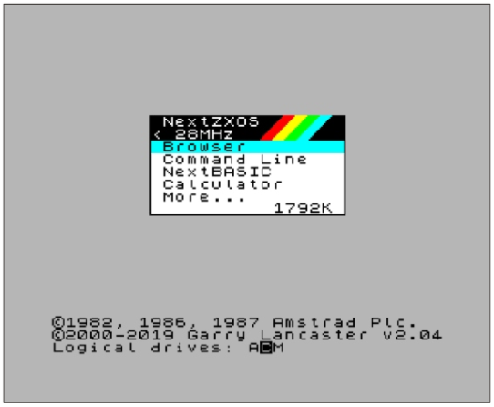
Se puede navegar utilizando las teclas de cursor, las teclas 5, 6, 7 y 8, o un joystick (si se ha configurado en modo Kempston, MD o cursor). Enter o el botón del joystick selecciona un elemento.
La opción More… muestra un segundo menú con más opciones.
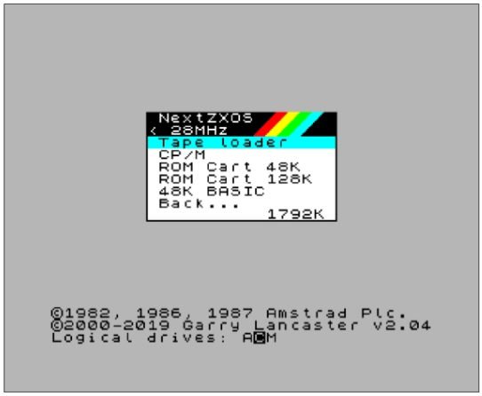
Si se elige Browser, se cargará el navegador de NextZXOS, desde el que es posible desplazarse viendo el contenido de la tarjeta microSD y cargar directamente diferentes tipos de archivo (TAP, NEX, DSK, SNA, SNX, Z80, Z8, etc.).
|
El navegador muestra las entradas de archivos y directorios en el orden de la tabla FAT interna, y no de manera alfabética. Si se desea ver esta información ordenada, se debe reorganizar la estructura de la tarjeta con una utilidad como FAT Sorter para Windows, FATsort para Linux y MacOS, YAFS, SDSorter u otros. |
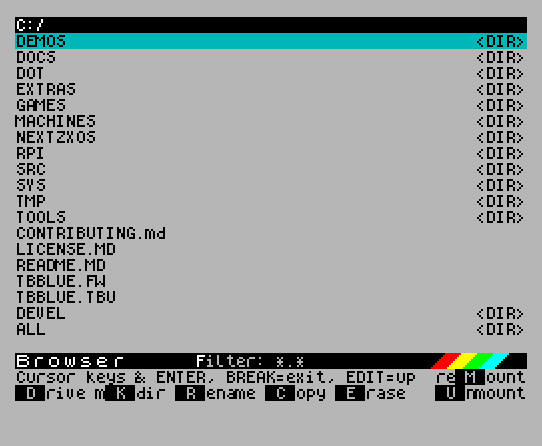
|
En el momento de escribir estas líneas, el core de ZX Spectrum Next para ZXDOS+ no soporta el uso del acelerador basado en Raspberry Pi, así que no es posible cargar ficheros TZX. |
|
Por defecto, no es posible cargar ficheros TRD dede el navegador (se debe configurar NextZXOS para cargar una "personalidad" con esxdos). |
Para más información, consultar el manual de uso oficial.
MSX
MSX1FPGA es un proyecto para clonar MSX1. El desarrollo original es de Fabio Belavenuto y se encuentra disponible en GitHub.
Algunas de sus características son:
-
MSX1 a 50Hz o 60Hz;
-
Utiliza Nextor ROM con un controladr para SD
-
Mapa de teclado configurable
-
Simulación de línea de exploración (Scanlines)
-
Soporte para joystick
Formato de Tarjeta microSD
Se debe de utilizar una tarjeta microSD con la primera partición en formato FAT16 con código 0x06 (16-bit FAT). Es también posible utilizar una segunda partición FAT16 para albergar todo el software, dejando la primera sólo para arrancar el sistema.
Obtener lo siguiente:
-
Ficheros básicos del proyecto para la SD desde GitHub
-
Controlador (
NEXTOR.SYS) y ROM (NEXTOR.ROM) de Nextor también desde GitHub -
ROM de MSX1 (
MSX_INT.rom,MSX_JP.romoMSX_USA.rom) en el mismo repositorio
Copiar el contenido del directorio SD en la raíz de la primera partición de la tarjeta microSD.
Copiar NEXTOR.SYS en el mismo lugar.
Copiar NEXTOR.ROM en el directorio MSX1FPGA.
Copiar la ROM deseada de MSX1 (MSX_INT.rom, MSX_JP.rom o MSX_USA.rom) en el directorio MSX1FPGA, pero usando el nombre MSX1BIOS.ROM.
En el fichero /MSX1FPGA/config.txt se guarda la configuración del core, según este formato:
11SP01 |||||| |||||+-Modo de línea de exploración: 1=Activo, 0=Inactivo ||||+--Turbo: 1=Arrancar con el modo turbo activo |||+---Sistema de color: N=NTSC, P=PAL ||+----Mapa de Teclado: E=Inglés, B=Brasileño, F=Francés, S=Castellano |+-----Scandoubler(VGA): 1=Activo, 0=Inactivo +------Nextor: 1=Activo, 0=Inactivo
Si no estuviera ya, instalar el core de MSX en el ZXDOS+.
Teclado
Teclas especiales y botones
Las combinaciones específicas de gomaDOS+ que se indican a continuación se corresponden con el modo de teclado MSX. Véase el apartado dedicado a los modos de teclado de gomaDOS+ para más información. También se pueden utilizar las equivalentes en el modo de teclado PC XT.
Durante la ejecución del core:
-
Impr Pant: Cambia el modo entre VGA y RGB -
Bloq Desp(Caps Shift+Symbol Shift+Gen gomaDOS+): Cambia el modo de línea de exploración (Scanlines) -
Pausa: Cambia entre 50Hz y 60Hz -
F11(Caps Shift+Symbol Shift+Qen gomaDOS+): : Activa o desactiva el modo turbo -
Ctrl+Alt+Supr: Soft Reset -
Ctrl+Alt+F12: Hard Reset -
Ctrl+Alt+Backspace(Caps Shift+Symbol Shift+Ben gomaDOS+, en modo de tecladoZX Spectrum): Reinicia la FPGA -
ALT Izquierdo: MSX GRAPH -
ALT Derecho: MSX CODE -
Re Pág: MSX SELECT -
Inicio: MSX HOME (Mayús+HOME: CLS) -
Fin: MSX STOP -
ÑoWindows: MSX DEAD
|
En BASIC, se puede usar |
|
Para cambiar el modo de vídeo entre 50Hz y 60Hz (para ejecución correcta de programas PAL a través de VGA), se puede usar también |
Guía básica
Para acceder a BASIC desde MSX-DOS, ejecutar el comando BASIC.
Desde BASIC, se puede cargar desde una cinta (u otro dispositivo externo de audio) con los comandos RUN"CAS:", BLOAD"CAS:",R o CLOAD.
Notar
Para acceder a MSX-DOS desde BASIC, ejecutar CALL SYSTEM.
MSXCTRL
Se trata de una utilidad exclusiva del core MSX1FPGA, que permite controlar todas las opciones del core que antes solo eran accesibles a través del fichero de configuración o pulsando determinadas teclas.
Al ejecutar MSXCTRL se muestran los parámetros de uso:
MSXCTRL.COM - Utility to manipulate MSX1FPGA core.
HW ID = 06 - ZX-Uno Board
Version 1.3
Mem config = 82
Has HWDS = FALSE
Use:
MSXCTRL -h -i -r -b -[5|6] -m<0-2>
-c<0-1> -d<0-1> -t<0-1>
[-w<filename> | -l<filename>]
-k<0-255> -e<0-255> -p<0-255>
-s<0-255> -o<0-255> -a<0-255>
MSXCTRL -h muestra ayuda para cada parámetro. Así, MSXCTRL -i presenta la configuración actual, los parámetros -t 1 encienden el modo turbo, etc.
Otros
Existen múltiples sistemas para cargar los juegos dependiendo del tipo de archivo: .CAS, .DSK o ROM (ver este hilo del foro de ZX-Uno para más información).
El mapeo de para teclado español disponible con la distribución oficial se puede cambiar por otro más completo. Ver aquí para más información.
Amstrad CPC
El core para ZXDOS+ de Amstrad CPC está basado en el proyecto FPGAmstrad de Renaud Hélias.
Algunas de sus características son:
-
VGA: 640x480 VGA centrado a 60Hz
-
Selección de discos: El primer disco detectado se inserta en el arranque y la pulsación de una tecla hace reset y carga el siguiente
Formato de Tarjeta microSD
Se debe de utilizar una tarjeta microSD con la primera partición en formato FAT32, de 4GB de tamaño máximo y 4096 bytes por cluster.
Además son necesarios los ficheros ROM siguientes (se pueden obtener en la wiki oficial del proyecto original) o en el repositorio de GitHub:
- OS6128.ROM
- BASIC1-1.ROM
- AMSDOS.ROM
- MAXAM.ROM
También es recomendable incluir uno o más ficheros con imágenes de disco (DSK) con el software que se quiera ejecutar.
Copiar tanto los ficheros ROM como los DSK a la raíz de la partición FAT32.
Teclado
Teclas especiales y botones
Las combinaciones específicas de gomaDOS+ que se indican a continuación se corresponden con el modo de teclado Amstrad CPC. Véase el apartado dedicado a los modos de teclado de gomaDOS+ para más información. También se pueden utilizar las equivalentes en el modo de teclado PC XT.
Durante la ejecución del core:
-
Re Pág(Caps Shift+Symbol Shift+Een gomaDOS+): Hace un Reset del Amstrad y carga el siguiente archivoDSKen orden alfabético. -
En un teclado PS/2, sólo funciona la tecla mayúsculas del lado izquierdo del teclado.
Guía básica
Escribir el comando CAT para ver el contenido del fichero DSK cargado actualmente.
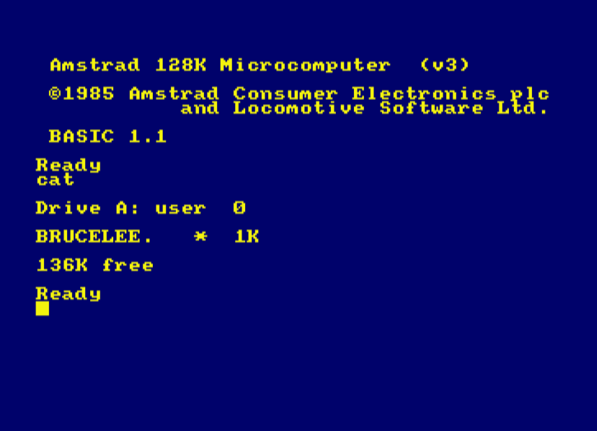
Escribir el comando RUN"<nombre> para cargar un programa del disco

Usar la tecla Re Pág para hacer reset y cargar el siguiente archivo DSK en orden alfabético.
Acorn Atom
El Acorn Atom era un computador casero hecho por Acorn Computers. El core para ZXDOS+ (basado en el de ZX-Uno realizado por Quest) es una adaptación del proyecto AtomFPGA. Se puede ver más información en el foro de ZX-Uno.
Formato de Tarjeta microSD
Se debe de utilizar una tarjeta microSD con la primera partición en formato FAT16.
Descargar la última versión de Atom Software Archive desde GitHub.
Ahora, se puede organizar la información en la tarjeta microSD de dos maneras distintas:
-
Descomprimir todo el contenido del archivo en la raíz de la tarjeta. El contenido del directorio
SYSes compatible con el directorioSYSde esxdos, siendo posible combinar los dos en uno solo. -
Organizar la información de una manera más reducida en la raíz, utilizando sólo dos directorios. Crear un directorio
ATOMen la raíz de la tarjeta, y copiar en su interior todo el contenido del archivo, excepto el directorioMANPAGESque se tendrá que poner también en la raíz de la microSD. Luego, copiar los ficheros del archivotrick_ATOM_folder(disponible en el foro de ZX-Uno), reemplazando todos los que se encuentren con el mismo nombre. Así, quedará una estructura como la siguiente:
/
+-ATOM/
| +-AA/
| (...)
| +-AGD/
| | +-SHOW2
| | +-SHOW3
| (...)
| +-MENU
| (...)
| +-TUBE/
| | +-BOOT6502
| (..)
|
+-MANPAGES/
| +-CPM.MAN
| +-FLEX.MAN
| (...)
|
+-MENU
Teclado
Teclas especiales y botones
Las combinaciones específicas de gomaDOS+ que se indican a continuación se corresponden con el modo de teclado Acorn Electron. Véase el apartado dedicado a los modos de teclado de gomaDOS+ para más información. También se pueden utilizar las equivalentes en el modo de teclado PC XT.
Durante la ejecución del core:
-
Mayús+F10: Muestra el menú de Atom Software Archive -
F10(Caps Shift+Symbol Shift+0en gomaDOS+): Soft Reset -
F1(Caps Shift+Symbol Shift+1en gomaDOS+): Modo turbo 1Mhz -
F2(Caps Shift+Symbol Shift+2en gomaDOS+): Modo turbo 2Mhz -
F3(Caps Shift+Symbol Shift+3en gomaDOS+): Modo turbo 4Mhz -
F4(Caps Shift+Symbol Shift+4en gomaDOS+): Modo turbo 8Mhz
El teclado está mapeado en inglés, según el siguiente esquema:
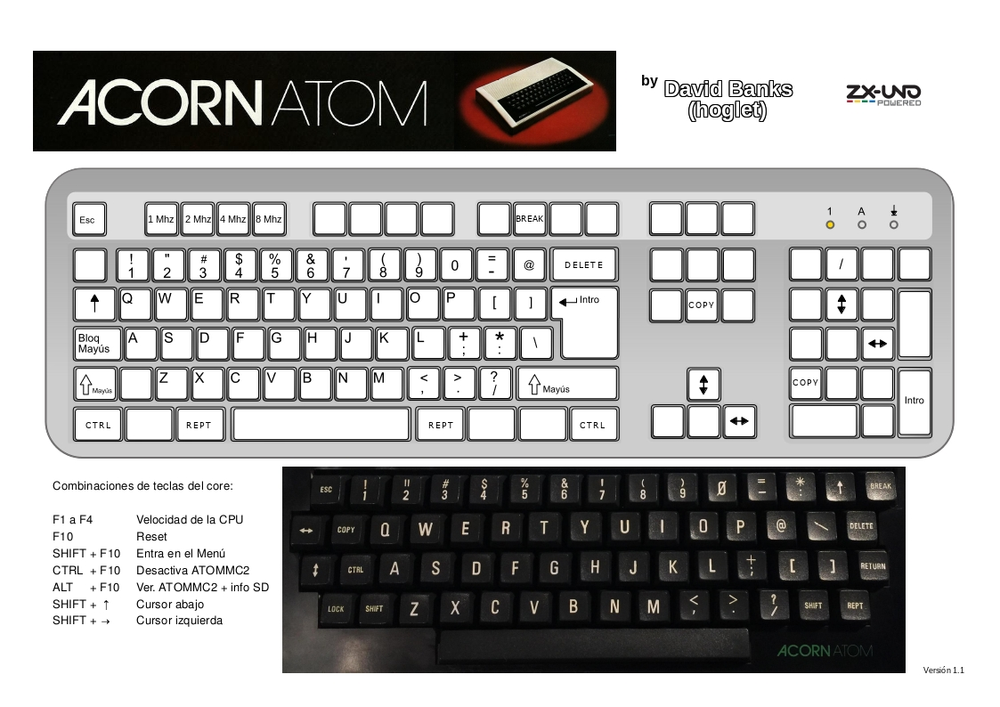
Guía básica
Tras iniciar el core, en algunos casos, puede suceder que se muestre una pantalla llena de @. Basta con retirar e insertar, o simplemente insertar, la tarjeta microSD, para que empiece a funcionar.
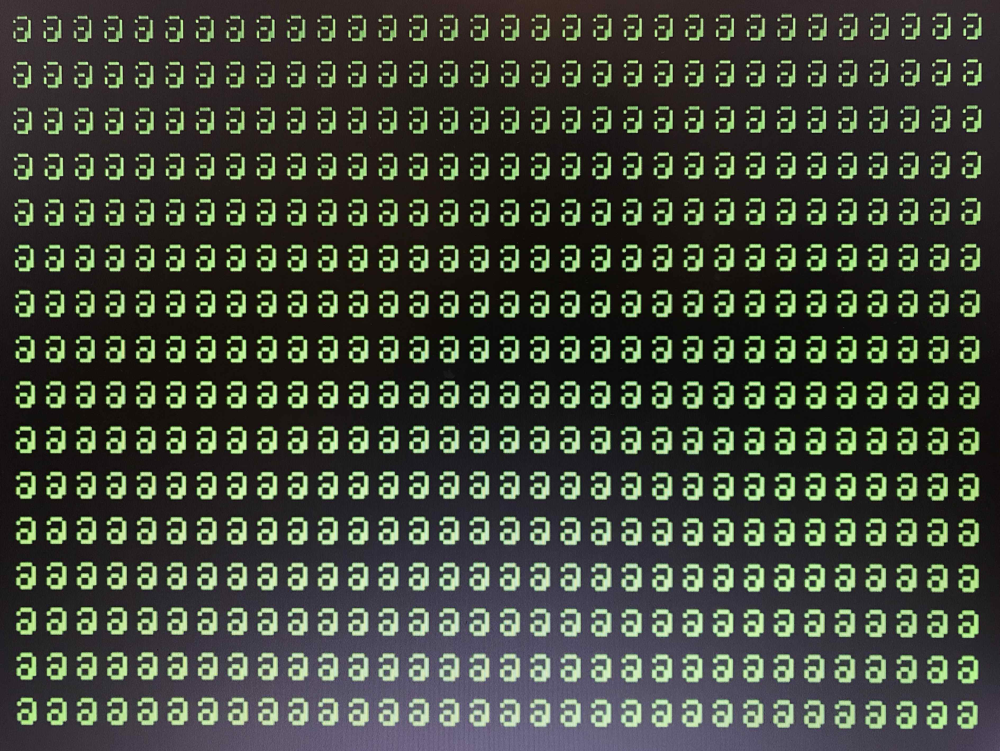
Una vez iniciado, pulsar Mayús+F10 para mostrar el menú desde el que se pueden cargar los programas de Atom Software Archive de la tarjeta.
Commodore 64
Commodore 64 (C64, CBM 64/CBM64, C=64,C-64, VIC-641) es una computadora doméstica de 8 bits desarrollada por Commodore International.
El core para ZXDOS+ está siendo desarrollado por Neuro.
Formato de Tarjeta microSD
Se puede utilizar una tarjeta microSD con la primera partición en formato FAT16 o FAT32. Es posible cargar desde la misma tanto archivos de imagen de disco (D64) como ficheros de cinta (TAP).
Si no estuviera ya, instalar el core de Commodore 64 en el ZXDOS+.
Teclado
Teclas especiales y botones
Las combinaciones específicas de gomaDOS+ que se indican a continuación se corresponden con el modo de teclado Commodore 64. Véase el apartado dedicado a los modos de teclado de gomaDOS+ para más información. También se pueden utilizar las equivalentes en el modo de tecldo PC XT.
Durante la ejecución del core:
-
F9Caps Shift+Symbol Shift+9en gomaDOS+): Reproducir un archivo TAP de cinta -
F12(Caps Shift+Symbol Shift+Wen gomaDOS+): Muestra menú de opciones -
Bloq. Despl.(Caps Shift+Symbol Shift+Gen gomaDOS+): cambia de modo video compuesto a VGA y viceversa. -
Esc(Caps Shift+Espacioen gomaDOS+): RUN/STOP (Mayús+RUN/STOP: Carga desde cinta)
Guía básica
Tras pulsar F12 (Caps Shift+Symbol Shift+W en gomaDOS+), aparece el menú de opciones.
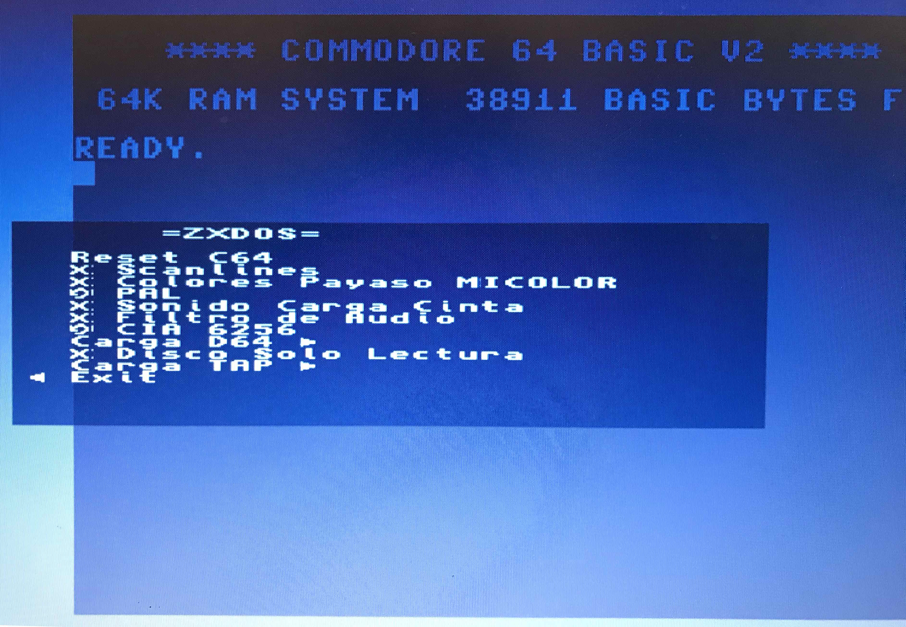
Desde dicho menú se puede
-
Hacer reset del core
-
Activar o desactivar la simulación de línea de exploración (Scanlines)
-
Cambiar la paleta de color
-
Cambiar entre modo video compuesto y modo VGA
-
Activar o desactivar el sonido de carga de cinta
-
Encender o apagar un filtro de audio
-
Cargar imagen de disco D64
-
Cargar fichero de cinta TAP
Para cargar desde un disco, habitualmente, se ha de escribir LOAD "*",8,1 y pulsar Enter. Una vez aparezca READY en la pantalla, escribir RUN y pulsar Enter para ejecutar el programa.
Si el disco tuviera varios programas para ejecutar, escribir LOAD "$" y pulsar Enter. A continuación, escribir LIST, y pulsar Enter, para ver una lista con los archivos dentro del disco. Ahora, para cargar el archivo deseado, escribir LOAD "<nombre>",8 (donde <nombre> es el nombre del archivo a cargar) y pulsar Enter. Una vez aparezca READY en la pantalla, escribir RUN y pulsar Enter para ejecutar el programa. Si esto no funcionase, probar con el comando LOAD "<nombre>",8,1.
Para cargar desde una cinta, seleccionar la opción "Cargar fichero de cinta TAP" del menú de opciones. A continuación navegar por la tarjeta microSD y elegir el archivo de cinta a cargar, pulsar ENTER y cerrar el menú de opciones. Entonces escribir LOAD y pulsar Enter, o bien pulsar Mayús+Esc (Mayús+RUN/STOP). Finalmente, tras pulsar F9 (Caps Shift+Symbol Shift+9 en gomaDOS+) comenzará la reproducción del archivo de cinta (se puede usar la opción de activar el sonido de carga de la cinta del menú si se desea). Una vez finalizadada la carga, escribir RUN y pulsar ENTER si fuese necesario.
|
En este core el puerto 1 del joystick se corresponde con el puerto de la derecha, mirando de frente al ZXDOS+, y el puerto 2 se corresponde con el puerto de la izquierda. Esto es al contrario de lo que sucede en la mayoría de otros cores. |
Phoenix
Core del videojuego arcade de estilo matamarcianos diseñado por la empresa Amstar Electronics.
Algunas de sus características son:
-
Dos modos de vídeo seleccionables: RGB/PAL60Hz y VGA 60Hz
-
Simulación de línea de exploración (Scanlines) en VGA
-
Conmutación opcional para el giro de 90º en las direcciones de los controles
Formato de Tarjeta microSD
Este core no utiliza la tarjeta microSD.
Teclado
Teclas especiales y botones
Durante la ejecución del core:
-
QyAoCursor IzquierdoyCursor Derecho(o un joystick): Control de movimiento -
ZoXTecla Windows IzquierdayEspacio(o botones 1 y 2 del joystick): Disparos 1 y 2, así como inserción de moneda y botónStart -
F2(Caps Shift+Symbol Shift+2en gomaDOS+): Cambia el modo de vídeo entre RGB y VGA -
-(del teclado numérico): Activa o desactiva la simulación de línea de exploración (Scanlines) -
Tab(Caps Shift+Enteren gomaDOS+, en modo de tecladoPC XT): Activa o desactiva giro de 90º en las direcciones de los controles
Guía básica
Por defecto se inicia con los controles normales, para el uso de pantallas verticales. Si se tiene la pantalla en horizontal (lo más habitual), la imagen se ve de lado, pero para ayudar en el control, y que sea más natural y acorde con lo que se ve, pulsando Tab se consigue que las direcciones arriba-abajo estén intercambiadas con izquierda-derecha. Afecta por igual al joystick y al teclado.
Pong
Pong fue un videojuego de la primera generación de videoconsolas publicado por Atari.
Algunas las características del core son:
-
Dos modos de vídeo seleccionables: RGB/PAL60Hz y VGA 60Hz
-
7 tipos de juego
-
Soporte 2 o 4 jugadores
-
Compatible con joystick(s), teclado, ratón y codificadores (encoders) rotatorios (ver aquí para más información)
-
Varios modos de color
Formato de Tarjeta microSD
Este core no utiliza la tarjeta microSD.
Teclado
Teclas especiales y botones
Durante la ejecución del core:
-
Esco botón 2 del joystick (Caps Shift+Espacioen gomaDOS+, en modo de tecladoPC XT): Mostrar u ocultar el menú de configuración -
Ctrl+Alt+Backspace(Caps Shift+Symbol Shift+Ben gomaDOS+, en modo de tecladoZX Spectrum): Hard reset. Backspace es la tecla de borrar hacia atrás, encima del enter -
Bloq. Despl.(Caps Shift+Symbol Shift+Gen gomaDOS+, en modo de tecladoZX Spectrum): cambia de modo video compuesto a VGA y viceversa -
F3oF12(Caps Shift+Symbol Shift+3oCaps Shift+Symbol Shift+Wen gomaDOS+): Reinicio del juego -
Número del
1al7: Cambiar el tipo de juego -
Joystick 2 (derecha): Control de paleta de la derecha (Jugador 1).
-
Joystick 1 (izquierda): Control de paleta de la izquierda (Jugador 2)
-
Cursor arribayCursor abajooOyK: Control de paleta de la derecha (Jugador 1 en modo 2 jugadores y jugador 3 en modo de 4 jugadores) -
QyA: Control de paleta de la izquierda (Jugador 2 en modo 2 jugadores y jugador 4 en modo de 4 jugadores) -
Z,Mo botón de joystick 1: Saque manual -
Teclas de cursor (
Caps Shift+5,Caps Shift+6,Caps Shift+7yCaps Shift+8en gomaDOS+, en modo de tecladoPC XT) yEnterpara navegar por el menú
Guía básica
Pulsando Esc o el botón 2 del joystick (o Caps Shift+Espacio en gomaDOS+, en modo de teclado PC XT) se muestra el menú de configuración. Se usan las teclas de cursor (Caps Shift+5, Caps Shift+6, Caps Shift+7 y Caps Shift+8 en gomaDOS+, en modo de teclado PC XT) y Enter para elegir y seleccionar opciones del menú.

En él se pueden activar o desactivar las siguientes opciones:
-
Servicio automático o manual (Serve)
-
Ángulo de la bola (Ball Angle)
-
Velocidad de la bola (Ball Speed)
-
Tamaño de las palas (Paddle Size)
-
Sonido (Sound)
-
Cuatro jugadores (Four players)
-
Velocidad Aleatoria (Random Speed)
-
Ángulo Aleatorio (Random Angle)
-
Control por Joystick, teclado o ratón (Joystick)
-
Precisión del movimiento (Paddle Accuracy)
-
Modo de color (Mode)
-
Salir del menú (Exit menu)
NES
Nintendo Entertainment System (también conocida como Nintendo NES o simplemente NES) es la segunda consola de sobremesa de Nintendo.
La versión para ZXDOS+ ha sido creada por Nihirash, basándose en la anterior para ZX-Uno de DistWave y Quest.
Algunas de las características del core son:
-
Filtro HQ2X que "despixeliza" la imagen
-
Simulación de línea de exploración (Scanlines)
-
Utiliza el reloj de la NES NTSC, por tanto funcionan correctamente las ROMs USA. Las ROMs PAL van más rápido de lo que deberían
-
Permite cargar ROMS desde la SD
-
Necesita, al menos, un mando o joystick conectado y que tenga varios botones de disparo
-
Sólo soporta salida VGA y utiliza timings poco rigurosos, por lo que es posible que de problemas en algunos monitores
Formato de Tarjeta microSD
Se debe de utilizar una tarjeta microSD, con la primera partición en formato FAT16, para almacenar los ficheros con las imágenes ROM (extensión .NES) de los juegos que se desee cargar. Los ficheros pueden estar en subdirectorios.
Si no estuviera ya, instalar el core de NES en el ZXDOS+.
Teclado
Teclas especiales y botones
Durante la ejecución del core:
-
Esco botón 2 del joystick (oCaps Shift+Espacioen gomaDOS+, en modo de tecladoPC XT): Mostrar u ocultar el menú de configuración -
Teclas de cursor (
Caps Shift+5,Caps Shift+6,Caps Shift+7yCaps Shift+8en gomaDOS+, en modo de tecladoPC XT), yEnterpara usar el menú -
Ctrl+Alt+Backspace(Caps Shift+Symbol Shift+Ben gomaDOS+, en modo de tecladoZX Spectrum): Hard reset. Backspace es la tecla de borrar hacia atrás, encima del enter
Guía básica
Pulsando Esc se muestra el menú de configuración. Para desplazarse por el menú y activar o elegir alguna opción, se utilizan las teclas de cursor (Caps Shift+5, Caps Shift+6, Caps Shift+7 y Caps Shift+8 en gomaDOS+, en modo de teclado PC XT), y Enter.
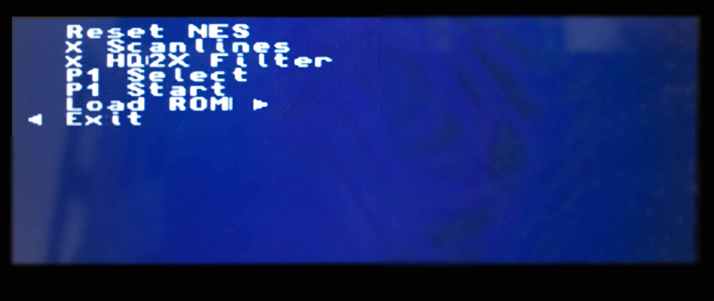
En él se pueden activar o desactivar las siguientes opciones:
-
Reiniciar la NES (Reset NES)
-
Activar o desactivar línea de exploración (Scanlines)
-
Encender o apagar el filtro que suaviza la imagen (HQ2X Filter)
-
Simular la pulsación del botón Select del mando 1 (P1 Select)
-
Simular la pulsación del botón Start del mando 1 (P1 Start)
-
Elegir un ROM para cargar desde la SD (Load ROM)
-
Salir del menú (Exit)
ColecoVision
ColecoVision es una consola de videojuegos lanzada al mercado por la empresa Coleco.
La versión para ZXDOS+ está basada en la versión para ZX-Uno de Fabio Belavenuto.
Algunas de las características del core son:
-
La ROM de la BIOS se carga desde la tarjeta microSD
-
Soporta ROM multicartucho, que también se carga desde la microSD
-
Sólo funciona en VGA ¿?
Formato de Tarjeta microSD
Se debe de utilizar una tarjeta microSD, con la primera partición en formato FAT16, para almacenar los ficheros con las imágenes ROM y otros archivos necesarios. Los archivos se pueden descargar desde la web del proyecto original en GitHub.
Si no estuviera ya, instalar el core de ColecoVision en el ZXDOS+.
Teclado
Teclas especiales y botones
Durante la ejecución del core:
-
Cursor o
Q,A,E,Ro el joystick 1: Controles de dirección del jugador 1 -
Zo el botón de joystick 1: Botón de disparo 1 del jugador 1 -
U,J,O,Po el joystick 2: Controles de dirección del jugador 2 -
Mo el botón de joystick 2: Botón de disparo 1 del jugador 2 -
Xo el botón secundario de joystick 1: Botón de disparo 2 del jugador 1 y del jugador 2 -
0a9: Botones del 0 al 9 del jugador 1 y el jugador 2 -
T: Botón '*' -
Y: Botón '#' -
'Esc' (o
Caps Shift+Espacioen gomaDOS+, en modo de tecladoPC XT): Soft Reset
Guía básica
Al iniciar, la ROM de la BIOS se carga desde la tarjeta SD, así como la ROM multicartucho.
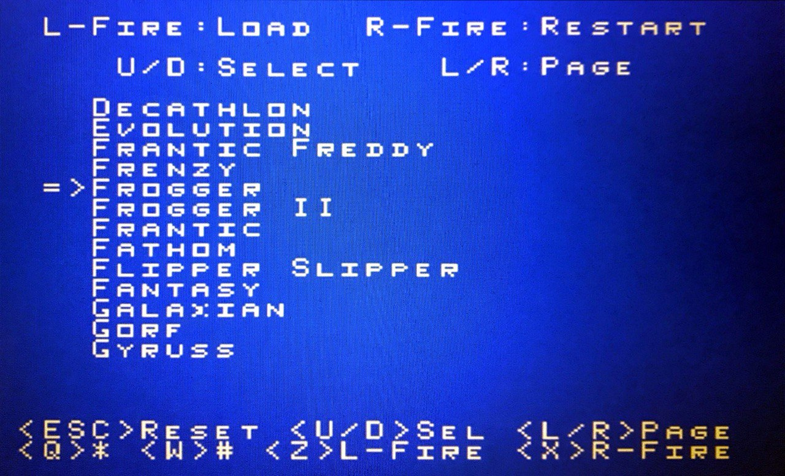
En el menú multicartucho, usar los controles de dirección para elegir la ROM a cargar, y luego el botón de disparo 1 para cargar la ROM elegida. Pulsando Esc (Caps Shift+Espacio en gomaDOS+, en modo de teclado PC XT) se reinicia el core y se vuelve a cargar el menú de selección de ROM.
Atari 2600
La Atari 2600 es una videoconsola lanzada al mercado bajo el nombre de Atari VCS (Video Computer System).
La versión para ZXDOS+ está desarrollada por avlixa.
Algunas de las características del core son:
-
Dos modos de vídeo seleccionables: RGB y VGA
-
Compatible con joystick(s), teclado, ratón y codificadores (encoders) rotatorios (ver aquí para más información)
Formato de Tarjeta microSD
Se debe de utilizar una tarjeta microSD, con la primera partición en formato FAT16, para almacenar los ficheros con las imágenes ROM que se deseen cargar.
Si no estuviera ya, instalar el core de Atari 2600 en el ZXDOS+.
Teclado
En gomaDOS+, se recomienda cambiar el modo de teclado a Atari 800 (Caps Shift + Symbol Shift + U y luego 4) o PC XT (Caps Shift + Symbol Shift + U y luego 9).
Teclas especiales y botones
Durante la ejecución del core:
-
W,A,S,Do el joystick 1: Controles de dirección del jugador 1 -
Fo el botón de disparo del joystick 1: Disparo del jugador 1 -
I,J,K,Lo el joystick 2: Controles de dirección del jugador 2 -
Ho el botón de disparo del joystick 2: Disparo del jugador 2 -
Bloq. Despl.(Caps Shift+Symbol Shift+Gen gomaDOS+): para cambiar entre modo de video compuesto y VGA -
Ctrl+Alt+Backspace(Caps Shift+Symbol Shift+Ben gomaDOS+): Hard reset.
Guía básica
Pulsando Esc o el botón 2 del joystick (o Caps Shift+Espacio en gomaDOS+, en modo de teclado Atari800) se muestra el menú de configuración. Se usan las teclas de cursor (Caps Shift+5, Caps Shift+6, Caps Shift+7 y Caps Shift+8 en gomaDOS+, en modo de teclado Atari800) y Enter para elegir y seleccionar en el menú.
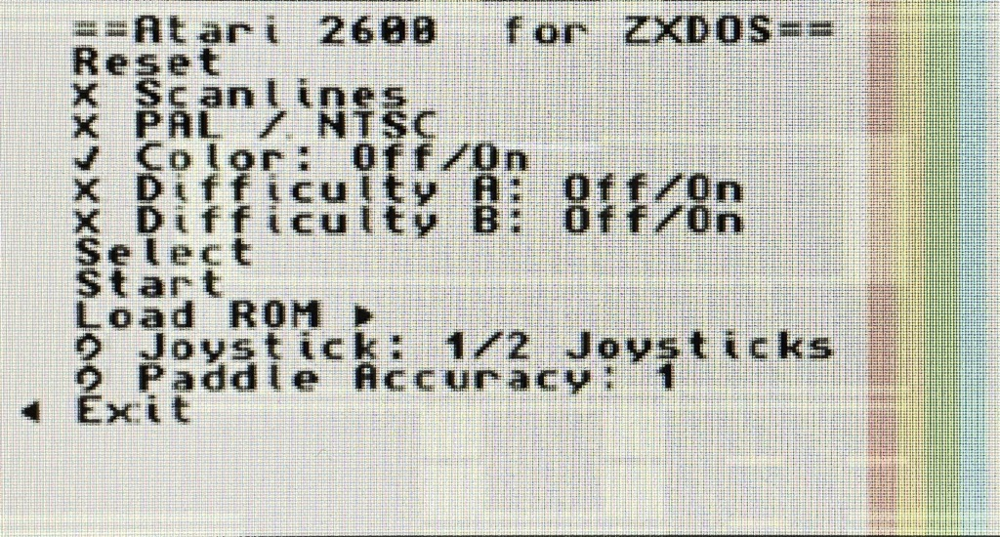
En él se pueden activar, desactivar o configurar las siguientes opciones:
-
Reiniciar el core (Reset)
-
Línea de exploración (Scanlines)
-
Modo RGB (PAL/NTSC)
-
Tamaño de las palas (Paddle Size)
-
Sonido (Sound)
-
Color (Color)
-
Dificultad A (Difficulty A)
-
Dificultad B (Difficulty B)
-
Select
-
Start
-
Cargar ROM (Load ROM)
-
Joystick
-
Precisión de paddle (Paddle Accuracy)
-
Salir del menú (Exit)
Videopac
La Philips Videopac, también conocida como Magnavox Odyssey², Philips Videopac G7000 o Philips Odyssey² es una videoconsola lanzada en 1978.
La versión para ZXDOS+ está desarrollada por avlixa, basada en el core de ZXDOS de yomboprime.
Algunas de las características del core son:
-
Dos modos de vídeo seleccionables: RGB y VGA
-
Necesita Joystick(s) para funcionar
-
Modos de color incluyendo monocromo o fósforo verde/naranja
-
Soporte para modificar el tipo de letra (charset) de la ROM de VDC
-
Módulo de efectos de sonido y voz (The Voice)
Formato de Tarjeta microSD
Se debe de utilizar una tarjeta microSD, con la primera partición en formato FAT16, para almacenar los ficheros con las imágenes ROM que se deseen cargar.
Si no estuviera ya, instalar el core de Videopac en el ZXDOS+.
Teclado
En gomaDOS+, se recomienda cambiar el modo de teclado a PC XT (Caps Shift + Symbol Shift + U y luego 9).
Teclas especiales y botones
Durante la ejecución del core:
-
F1(Caps Shift+Symbol Shift+5en gomaDOS+): Carga una ROM de prueba. -
Bloq. Despl.(Caps Shift+Symbol Shift+Gen gomaDOS+): para cambiar entre modo de video compuesto y VGA -
Ctrl+Alt+Backspace(Caps Shift+Symbol Shift+Ben gomaDOS+): Hard reset. -
Tras cargar una ROM, la mayoría de los juegos mostrarán un mensaje "SELECT GAME". Pulsar una tecla entre
0y9o el botón del joystick para jugar. -
Esco el botón 2 del joystick (oCaps Shift+Espacioen gomaDOS+) para mostrar u ocultar el menú. -
W,A,S,Do las teclas de cursor (Caps Shift+5,Caps Shift+6,Caps Shift+7yCaps Shift+8en gomaDOS+, en modo de tecladoPC XT) y luegoEnterpara elegir y seleccionar en el menú.
Guía básica
No suele haber información en pantalla de las opciones, así que es interesante consultar las instrucciones de cada juego (por ejemplo en este enlace) para saber qué hacer para jugar.
Notar también que el sistema no tiene claramente definido qué joystick se corresponde al cada jugador, e incluso pueden ir alternando para algunos juegos, así que puede ser necesario ir cambiando entre los dos, o bien (para partidas de un sólo jugador ) usar la opción del menú que unifica los dos joysticks.
|
Si, al navegar por el directorio donde están las ROMS, no se ven todas, se puede dividir el contenido en varios subdirectorios con menos ficheros por directorio (por ejemplo, clasificando por letras) para solucionarlo. |
Pulsando Esc o el botón 2 del joystick (o Caps Shift+Espacio en gomaDOS+, en modo de teclado PC XT) se muestra el menú de configuración. Se usan las teclas de cursor (Caps Shift+5, Caps Shift+6, Caps Shift+7 y Caps Shift+8 en gomaDOS+, en modo de teclado PC XT) y Enter para elegir y seleccionar en el menú.
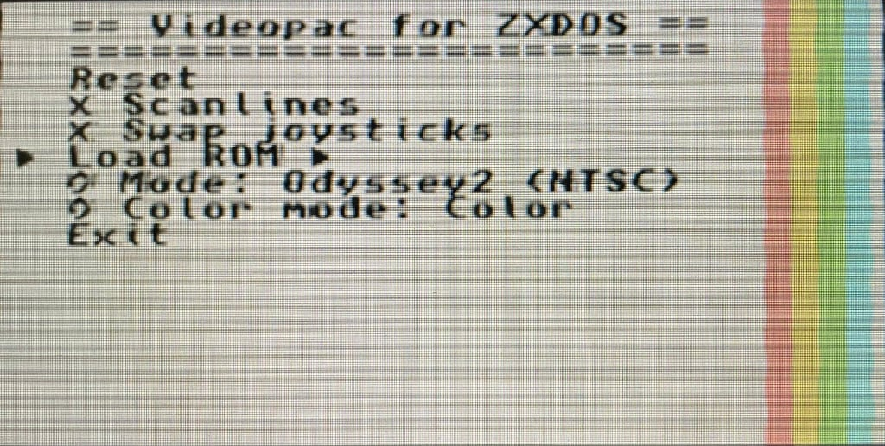
En él se pueden activar, desactivar o configurar las siguientes opciones:
-
Reiniciar el core (Reset)
-
Línea de exploración (Scanlines)
-
Intercambiar el orden de los joysticks (Swap Joysticks)
-
Unir los joysticks (Join Joysticks). Útil para ROMs que alternan el joystick en las partidas
-
Cargar ROM (Load Cartridge ROM)
-
Cargar un tipo de letra alternativo (Load VDC Font)
-
Modo de vídeo (PAL Videopac/NTSC Odyssey2)
-
Modo de color (Color Mode)
-
Activar o desactivar el módulo sintetizador (The Voice)
-
Salir del menú (Exit)
Cambio del charset de la ROM de VDC
Es posible, para algunas ROM, cargar un archivo CHR con una fuente modificada, en vez de la original incluida en el chip Intel 8244/8245.
Estos archivos se pueden crear siguiendo las instrucciones y utilizando el editor disponible en el repositorio del proyecto, siguiendo este enlace.
Otro Hardware
Codificadores rotatorios
Los cores de Pong y Atari 2600 están también preparados para usar codificadores rotatorios (encoders), de tipo cuadratura, conectados al puerto de joystick. Está probado con codificadores de 600 ppr (pulsos por revolución), pero teóricamente deberían servir también de menor ppr, como de 400 o 300.
También se puede utilizar con paddle del tipo volante de Atari 2600, pero no con los paddle del tipo raqueta. Eso sí, la experiencia en este caso es pobre, ya que son de muy pocos ppr y se deben hacer varios giros completos. Si se utilizan, se recomienda ajustar la precisión(accuracy) al valor 8 para conseguir una velocidad aceptable.
Conexión
Tanto el ZXDOS+ como el gomaDOS+ tienen conectado el pin 5 del joystick a voltaje positivo, que se utiliza para alimentación, y el pin 8 como GND. Los codificadores utilizados deben admitir voltajes de 3,4v a 5v.
Los codificadores tienen 5 cables: Tierra (no conectada), Vcc (+), GND (0V`ó `-), A y B.
Las conexiones A y B se conectan en los pines 1 y 2 para el primer codificador, y 3 y 4 para el segundo. Así se pueden tener hasta 4 codificadores conectados entre los 2 puertos de joystick.
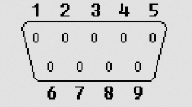
De esta manera, las conexiones serían:
-
Línea
Acodificador 1 -
Línea
Bcodificador 1 -
Línea
Acodificador 2 -
Línea
Bcodificador 2 -
Vcc(
+) -
Disparo 1
-
NC
-
GND -
Disparo 2
Configuración del Core de Pong
La forma de elegir la configuración es la siguiente:
-
Para 1 o 2 codificadores en el puerto 2 de joystick, seleccionar la opción
1/2 Paddle in J2. -
Para 2 codificadores, uno en cada puerto de joystick, seleccionar la opción
2/4 Paddle in J1&J2. Esta opción también sirve para conectar 2 paddle tipo driving de Atari 2600. -
Para 4 codificadores, dos en cada puerto de joystick, seleccionar la opción
2/4 Paddle in J1&J2. -
Para 1 o 2 codificadores en el puerto 2 de joystick junto con el ratón (en este caso los codificadores se asocian para los jugadores 2 y 4), seleccionar la opción
Mouse PS/2.
Se recomienda no realizar la conexión hasta haber seleccionado la opción deseada, ya que los codificadores actúan sobre el botón arriba/abajo del joystick y por tanto no permiten manejar el menú. Otra opción sería añadir un interruptor on/off en el codificador que deshabilite la alimentación y así no emita señal mientras se realiza la selección de menú.
Carga desde cinta
Para algunos cores como, por ejemplo, el de Spectrum o el de MSX, es posible cargar, igual que se hacía en las máquinas originales, desde un dispositivo externo de audio como un reproductor de cassette u otro que lo simule.
Normalmente, se debe utilizar un cable adecuado para la entrada de sonido del ZXDOS+, concretamente, ha de ser un cable con un jack estéreo de 3,5 mm en un extremo dos salidas mono en el otro (una para cada canal de audio), conectando el extremo del canal mono derecho al dispositivo de reproducción de cintas (esto no es necesario en Miniduino, ya que este automáticamente utiliza sólo el canal derecho de sonido al reproducir).
Reproductor de cassette
El funcionamiento es exactamente igual que se hacía con los equipos originales:
-
Conectar el cable de audio
-
Ejecutar en el equipo o elegir la opción correspondiente a la carga desde cinta. Por ejemplo, en ZX Spectrum 48K, pulsando
J, a continuación, dos veces,"(Symbol Shift + Pen gomaDOS+) y luegoEnterpara ejecutar el clásicoLOAD "" + Enter -
Iniciar la reproducción de la cinta (es posible que haya que hacer distintos intentos ajustando el volumen del reproductor)
Ordenador
Según el sistema operativo (Windows, MacOS, Linux) existen múltiples alternativas de programas que pueden, o bien reproducir directamente un archivo de cinta (TAP, TZX, PZX, etc.) y emitir el sonido por la salida de auriculares, o bien crear un fichero de sonido (WAV, VOC, AU, etc.) que se puede reproducir también con programas de música o sonido.
PlayTZX
Este programa para Windows, MacOS o Linux, permite reproducir un fichero de cinta TZX a través de la salida de sonido del ordenador.
Se puede descargar el fichero binario (por ejemplo, para Windows desde World of Spectrum Classic y para Mac desde este repositorio de GitHub) o compilar el código fuente como se explica a continuación.
-
Conectar el cable de audio entre la salida del ordenador y la entrada de audio del ZXDOS+ (recordar conectar únicamente el extremo del canal mono derecho al extremo del PC/Mac, etc.)
-
Ejecutar en el equipo o elegir la opción correspondiente a la carga desde cinta. Por ejemplo, en ZX Spectrum 48K pulsando
Ja continuación, dos veces,"(Symbol Shift + Pen gomaDOS+) y luegoEnterpara ejecutar el clásicoLOAD "" + Enter
-
Iniciar la reproducción de un fichero de cinta con el siguiente comando (es posible que haya que hacer distintos intentos ajustando el volumen de salida del equipo)
./playtzx <fichero de cinta>Si todo va bien, se irá viendo en la consola los distintos bloque de carga de la cinta, mientras el sonido se produce y el core del ZXDOS+ carga el programa.
|
En Linux, el programa utiliza como salida el dispositivo |
Compilar código fuente (MacOS o Linux)
Verificar que están instaladas las herramientas de desarrollo, incluyendo un compilador de C (gcc, clang herramientas de desarrollaor de línea de comandos en Mac, etc.) y GNU Autotools.
Descargar el código fuente desde este repositorio), descomprimirlo y acceder en una consola al directorio, y ejecutar los comandos:
aclocal && autoconf && autoheader && automake --add-missing
./configure
makeSi todo se ha hecho correctamente, se habrá generado el fichero tzplay que se puede copiar a donde se desee en el disco duro y utilizar. Se puede borrar el directorio descomprimido donde se compiló.
Teléfono móvil, tableta, reproductor de sonido MP3, etc.
En general, existen muy pocas alternativas (o ninguna) alternativas de programas que puedan reproducir directamente un archivo de cinta en un dispositivo móvil, así que, normalmente, será necesario convertir a un fichero de audio el contenido de la cinta antes de intentar cargarla con uno de estos aparatos.
PlayZX es una App para sistemas Android que es capaz de reproducir directamente a través de la salida de auriculares.
|
Los dispositivos con salida de auriculares modernos, suelen estar pensados para manejar impedancias el orden de unas pocas decenas de ohmios. Esto, a veces, puede ser insuficiente para la entrada del ZXDOS+. En esos casos, se recomienda (si es posible) desactivar las limitaciones de volumen máximo de auriculares y/o utilizar un dispositivo amplificador de auriculares, que eleve la impedancia. |
Los pasos a seguir en este caso son:
-
Conectar el cable de audio entre la salida del dispositivo móvil y la entrada de audio del ZXDOS+ (recordar conectar únicamente el extremo del canal mono derecho al extremo del PC/Mac, etc.)
-
Ejecutar en el equipo o elegir la opción correspondiente a la carga desde cinta. Por ejemplo, en ZX Spectrum 48K pulsando
Ja continuación, dos veces,"(Symbol Shift + Pen gomaDOS+) y luegoEnterpara ejecutar el clásicoLOAD "" + Enter -
Iniciar la reproducción del fichero de audio (o del fichero de cinta en el caso de PlayZX). Es posible que haya que hacer distintos intentos ajustando el volumen del reproductor/amplificador.
Conversión a fichero de audio
A continuación se indican algunos de los muchos programas que existen para distintos sistemas operativos, y que pueden exportar ficheros de cinta a ficheros de audio.
Tapir es un programa con interfaz gráfica para Windows (pero que se puede usar también con Wine en Linux o Mac) que permite cargar ficheros TZX y TAP y exportarlos como WAV de audio
tape2wav de Fuse Utilities es una utilidad de línea de comandos que exporta desde ficheros TZX PZX y TAP a WAV. Disponibles para muchos sistemas operativos distintos.
pzx2wav en PZX Tools es otra utilidad de comandos que exporta desde ficheros PZX a WAV. Disponible como ejecutable para Windows, y con el código fuente disponible para compilar en otros sistemas.
tsx2wav en TSXphpclass es una utilidad en PHP y que sirve para exportar desde ficheros TSX a WAV.
Miniduino
Miniduino es un sistema reproductor de archivos de cinta, basado en un microcontrolador STM32F103C8T6 con 64KB de flash, y que trae instalado de serie el firmware Maxduino.
Maxduino permite la reproducción, de una forma similar a como se manejaban las cintas de cassette originales, de archivos digitales de cinta en múltiples formatos como TAP y TZX (ZX Spectrum), O (ZX80), P (ZX81), CDT (Amstrad CPC), CAS(MSX) TSX (MSX, Acorn, etc). También es posible reproducir como cinta archivos de sonido AY, para cargarlos en SpecAY desde ZX Spectrum.
Puertos y Botones


1 |
Alimentación |
2 |
Salida de sonido |
3 |
Botón de control |
4 |
Control de motor |
5 |
Ranura de tarjeta microSD |
6 |
Pantalla |
Preparación
Se necesita una tarjeta microSD para almacenar los archivos de cinta que se quiere reproducir. Se recomienda que no sea de alta velocidad (Clase 10 o superior) porque puede haber problemas durante la lectura, ni de alta capacidad (SDXC o superior).
La tarjeta debe estar formateada con con la primera partición en formato FAT16 o FAT32.
Además de la tarjeta, recordar utilizar un cable adecuado para la entrada de sonido del ZXDOS+, conectando el Miniduino.
Para los equipos que soporten control por motor, también se puede utilizar un cable con un jack de 2,6 mm.
En la primera partición de la tarjeta se han de copiar los archivos de cinta (TAP, TZX, O, P, CAS, TSX, etc), que se pueden organizar en carpetas o directorios.
|
El reproductor muestra las entradas de archivos y directorios en el orden de la tabla FAT interna, y no de manera alfabética. Si se desea ver esta información ordenada, se debe reorganizar la estructura de la tarjeta con una utilidad como FAT Sorter para Windows, FATsort para Linux y MacOS, YAFS, SDSorter u otros. |
Uso
Una vez insertada la tarjeta microSD con ficheros de datos, el Miniduino se enciende conectando el cable de alimentación USB incluido.
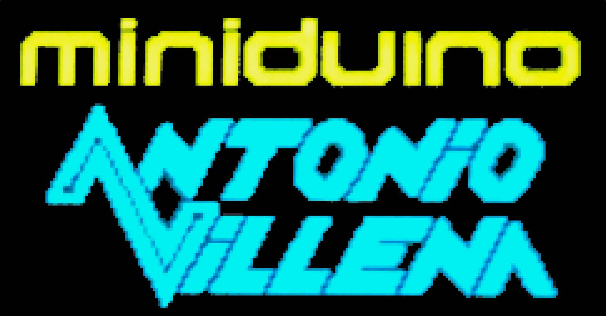
Si se pulsa directamente el botón de control, se accede al menú de opciones que permite modificar lo siguiente:
-
Velocidad (Baud Rate): Para ajustar la velocidad turbo en bloques 4B en archivos de MSX (
CASyTSX) -
Control de motor (Motor Ctrl): Para indicar que se ha conectado un cable de control remoto a un equipo que lo soporte (Amstrad, CPC, MSX, etc.)
-
Conversión (TSXCzxpUEFWS): Activa la carga turbo para los archivos
.CASy.TSX, cambiar la polaridad de la señal de audio de los archivos para Spectrum y Amstrad CPC y/o cambiar la paridad en los archivos.UEFde Acorn Electron y BBC Micro -
Saltar bloques (Skip BLK)): Para deshabilitar (Skip ON) o habilitar la pausa automática al encontrar bloques del tipo 2A
Estando fuera del menú de opciones, el botón de control se utiliza como una palanca de control de cuatro direcciones, que se comporta de dos maneras distintas, según esté la reproducción detenida (Stop) o en pausa (Pause).
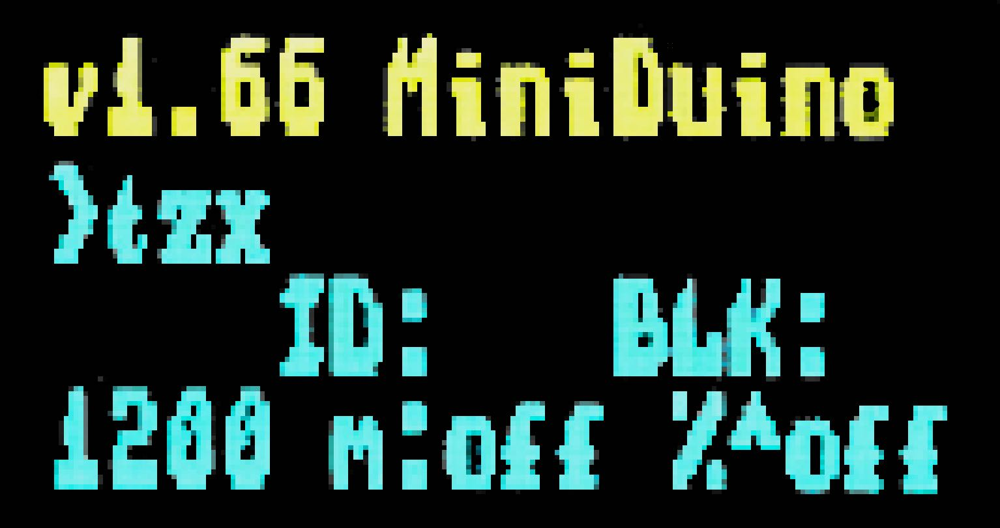
Con la reproducción detenida (navegación por archivos y directorios):
-
Arriba y abajo permiten desplazarse por la lista actual de ficheros y directorios
-
Izquierda (Stop) retrocede un nivel en el árbol de direcotorios
-
Derecha (Play/Pause) accede al contenido de un directorio o, si lo que hay seleccionado es un archivo, intenta reproducirlo
Una vez un archivo está en reproducción, el botón izquierda (Stop), la detiene, y el botón derecho (Play/Pause) la pone en pausa.

Con la reproducción en pausa (navegación por bloques de cinta):
-
Arriba y abajo permiten desplazarse por los bloques del archivo de cinta que ya hayan sido reproducidos (útil para juegos multicarga, para volver a cargar un bloque de un nivel, por ejemplo)
-
Izquierda (Stop) cancela la reprodución y entra de nuevo en el modo de navegación de archivos y directorios
-
Derecha (Play/Pause) reanuda la reproducción en el bloque seleccionado
-
Presionar directamente el botón de control permite activar o desactivar el modo turbo para MSX
|
Para obtener información mucho más detallada, se puede consultar el manual oficial del firmware Maxduino, disponible en el repositorio oficial. |
Actualización de firmware Maxduino
El firmware Maxduino es actualizado y mejorado periódicamente. Se puede hacer un seguimiento de los cambios y mejoras en el foro o bien en la página del proyecto en GitHub. Para poder aprovechar estas mejoras se ha de actualizar la memoria flash del Miniduino con la versión de firmware correspondiente.
Preparación del entorno
Para poder instalar el firmware, se ha de hacer desde un ordenador (Windows, Mac, Linux) con el entorno Arduino IDE.
Una vez instalado, se ha de añadir la biblioteca de software SDFat (1.1.4) eligiendo la opción de menú Programa→incluir librería→administrar bibliotecas
También se ha de añadir el soporte para el microcontrolador del Miniduino. Esto se hace en dos pasos:
Primero añadiendo soporte para procesadores ARXM Cortex M3 en el menú Herramientas → placa → gestor de tarjetas Instalar "Arduino SAM boards (Cortex-M3)"
A continuación se ha de añadir el soporte para microcontroladores STM32, descargando el fichero disponible en este enlace.
Descomprimir el contenido en la carpeta del usuario actual en
...Arduino/hardware/Arduino_STM32En Windows instalar el controlador USB ejecutando con privilegios elevados:
...\drivers\win\install_drivers.batEn Linux instalar con privilegios de root las reglas de udev necesarias:
...tools/linux/install.shEn MacOS, si no apareciese el Miniduino como dispositivo USB en Arduino IDE al conectarlo, puede que sea necesario instalar libusb.
Finalmente, en el caso de Mac o Linux, el fichero maple_upload dentro de Arduino_STM32 tiene que modificarse con un editor de texto. Estas líneas no funcionan bien:
if [ $# -eq 5 ]; then
dfuse_addr="--dfuse-address $5"
else
dfuse_addr=""
fiY se tienen que cambiar por
dfuse_addr=""Actualización
Una vez preparado el entorno, descargar la versión deseada del proyecto desde el repositorio oficial en GitHub
|
El reproductor Miniduino con microcontrolador STM32 sólo está soportado a partir de la versión 1.65 |
Cargar el fichero del proyecto en Arduino IDE (por ejemplo MaxDuino_v1.66.ino).
Verificar en el fichero userSTM32Config.h que están comentadas todas las entradas de logo excepto la de Miniduino, y si no, cambiarlas.
...
//#define tanque4
//#define tanque1
//#define dostanques
//#define cablemax
//#define sony
#define miniduino
...Conectar el Miniduino al equipo usando el cable USB e identificar el puerto asignado, normalmente con un nombre del tipo "Maple Mini" (por ejemplo: COM5 Maple Mini)
Configurar en el menú "" las opciones
Placa: Generic STM32F104C Series
Variant: STM32F104C8 (20k RAM, 64k Flash)
Upload Method: STM32duino bootloader
CPU Speed: 72Mhz (Normal)
Optimize: Smallest (default)
Puerto: <Puerto identificado antes>Finalmente, pulsar el botón de carga del firmware y esperar unos segundos mientras se compila el proyecto y se carga en el dispositivo.
Si todo se ha hecho correctamente se verá cómo el Miniduino se reinicia y en la pantalla aparece la versión correspondiente de firmware.
Solución de problemas
Gestión de imágenes de firmware
Existen distintas herramientas que permiten generar y/o editar el contenido de los ficheros ZX1, ZX2, ZXD.
zx123_tool
Esta es una herramienta que analiza, extrae o añade datos en ficheros de imagen de SPI flash de ZX-Uno, ZXDOS y otros dispostivos similares.
Para poder utilizarla se necesita Python 3. Según el sistema operativo que se utilice puede que sea necesario instalarlo.
Teniendo Python 3, basta con descargar la última versión de la herramienta desde su repositorio oficial, en este enlace.
Una vez descomprimido, se debe invocar desde una consola el script principal usando Python 3. Esto puede variar según el sistema operativo.
Por ejemplo, en Windows, suele ser:
py -3 zx123_tool.pyMientras que en otros sistemas operativos debería bastar con algo parecido a:
python3 ./zx123_tool.pyTambién hará falta un archivo de imagen flash. Este se puede obtener desde el core de Spectrum, en modo "root", con alguno de los comandos back16m, backzx2 o backzxd. Tras obtener el fichero generado en la microSD, se puede "limpiar" dejando sólo el core de Spectrum y la primera ROM de Spectrum con un comando similar a este:
... zx123_tool.py -i FLASH.ZXD -w -o FLASHempty.ZXDDonde FLASH.ZXD es la ruta al fichero obtenido desde el core de Spectrum, y FLASHempty.ZXD es la ruta al nuevo fichero "limpio".
Mostrar contenido de una imagen
Para ver el contenido de una imagen llamada FLASH.ZXD (cores instalados y algunos datos de configuración), se puede usar el comando
... zx123_tool.py -i FLASH.ZXD -lPara mostrar contenido de esa misma imagen, incluyendo datos de ROMs de ZX Spectrum:
... zx123_tool.py -i FLASH.ZXD -l -rModificar la BIOS de una imagen
Para modificar la BIOS de un fichero llamado FLASH.ZXD, usando la BIOS en otro fichero llamado FIRMWARE.ZXD
...zx123_tool.py -i FLASH.ZXD -a BIOS,FIRMWARE.ZXDAdemás de instalar la BIOS, se pueden modificar algunos de los valores por defecto. Por ejemplo, con las opciones; -m para el modo de vídeo: 0 (PAL), 1 (NTSC) ó 2 (VGA), -k para la distribución del teclado: 0 (Auto), 1 (ES), 2 (EN) ó 3 (Spectrum).
Así, para modificar la BIOS de un fichero llamado FLASH.ZXD, usando la BIOS en otro fichero llamado FIRMWARE.ZXD, y además configurar el modo de vídeo en VGA, y el teclado en modo Spectrum (para gomaDOS`+):
...zx123_tool.py -i FLASH.ZXD -a BIOS,FIRMWARE.ZXD -m 2 -k 3Existen también opciones para ajustar el tiempo de espera inicial de la BIOS, el core a ejecutar por defecto, o la ROM de Spectrum a utilizar por defecto. Véase la documentación de la herramienta para más información.
Añadir una ROM de Spectrum a una imagen
Para añadir una ROM de Spectrum llamada 48.rom, poniendo el nombre Spec48 y ocupando el slot 5, se puede usar un comando como:
...zx123_tool.py -i FLASH.ZXD -a ROM,5,xdnlh17,Spec48,48.romVéase la documentación de la herramienta para ver todas las posibles opciones a la hora de añadir una ROM de Spectrum.
Entre los datos que se indican al añadir una ROM, hay una serie de indicadores para definir qué opciones de hardware, etc. se desean habilitar o deshabilitar al cargar esa ROM en concreto, según se puede ver en esta tabla:
i |
Habilitar teclado issue 3 (en vez de issue 2) |
|---|---|
|
Deshabilitar la contención de memoria |
|
Habilitar DivMMC |
|
Habilitar NMI DivMMC (menú de esxdos) |
|
Usar timings de Pentagon |
|
Usar timings de 128K |
|
Deshabilitar puertos de DivMMC y ZXMMC |
|
Habilitar MMU horizontal de Timex |
|
Deshabilitar bit alto de ROM (bitd 2 de 1FFD) |
|
Deshabilitar bit bajo de ROM (bit 4 de 7FFD) |
|
Deshabilitar puerto 1FFD (paginado de +2A/3) |
|
Deshabilitar puerto 7FFD (paginado de 128K) |
|
Deshabilitar TurboSound (chip AY secundario) |
|
Deshabilitar chip AY |
|
Deshabilitar modo Radastaniano |
|
Deshabilitar modo Timex |
|
Deshabilitar ULAPlus |
Instalar un Core en una imagen
Para instalar un core en la posición 3, desde un fichero llamado NEXT.ZXD, llamándolo Spectrum Next, usar un comando como este:
...zx123_tool.py -i FLASH.ZXD -a 'CORE,3,Spectrum Next,NEXT.ZXD'Si además se quiere configurar como el core por defecto, se puede indicar también con un comando como:
...zx123_tool.py -i FLASH.ZXD -a 'CORE,3,Spectrum Next,NEXT.ZXD' -c 3Modificar la ROM de esxdos de una imagen
De forma similar a como se instala el firmware de la BIOS, se puede instalar directamente un fichero con la ROM de esxdos, con un comando como:
...zx123_tool.py -i FLASH.ZXD -a esxdos,ESXMMC.BINCombinar varias órdenes en una única línea
Notar que se pueden acumular varias órdenes en una única línea de comandos. Por ejemplo, para "limpiar" un archivo de imagen llamado FLASH.ZXD, creando uno nuevo llamado FLASHnew.ZXD, instalar la BIOS desde el fichero FIRMWARE.ZXD, configurar el modo de vídeo en VGA, el teclado en modo Spectrum (para gomaDOS`+), añadir una ROM de Spectrum llamada 48.rom, poniendo el nombre Spec48 y ocupando el slot 5, instalar un core en la posición 3, desde un fichero llamado NEXT.ZXD, llamándolo Spectrum Next, configurado como el core por defecto, usar un comando como este:
... zx123_tool.py -i FLASH.ZXD -w -o FLASHnew.ZXD -a BIOS,FIRMWARE.ZXD -m 2 -k 3 -a ROM,5,xdnlh17,Spec48,48.rom -a 'CORE,3,Spectrum Next,NEXT.ZXD' -c 3Recuperación del firmware
En algunos casos (por ejemplo al instalar un core experimental o hacer una actualización del core de ZX Spectrum o la BIOS) puede suceder que el ZXDOS+ deje de arrancar. Se encienden los LEDs pero no hay imagen ni responde a las distintas combinaciones de teclado para acceder a la BIOS, etc.
En esta situación, existen diferentes métodos de recuperación que permiten volver a instalar el firmware.
Preparación del cableado
En los siguientes pasos de recuperación se habla de conectar cables puente o USB-Blaster a la placa de ZXDOS+ o gomaDOS+. Para ello, usar las siguientes imágenes como referencia.
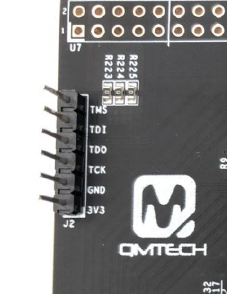 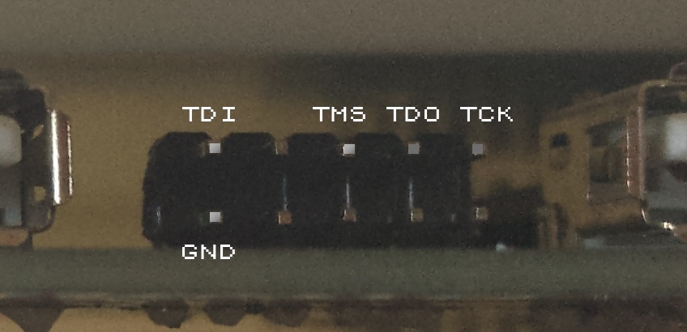
Notar que, en algunos modelos, el conector de JTAG está con los pines por la parte de debajo.
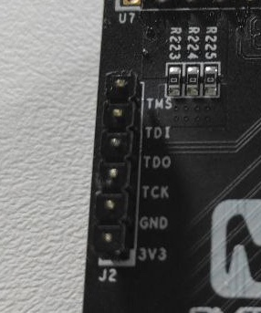 

|
NO se ha de conectar la línea de 3V |
|
En el caso de utilizar USB-Blaster, el gomaDOS+ tiene la distribución adecuada para conectar directamente el conector 2x5 incluido. Para ZXDOS+, podría ser necesario preparar el cableado adecuado, comparando las imágenes anteriores. |
Recuperación usando una Raspberry Pi
Material necesario:
-
Raspberry Pi (con tarjeta SD, teclado, monitor, fuente de alimentación, etc.) y con conexión a internet
-
5 cables puente para prototipos (idealmente, hembra en los dos extremos), o bien, en vez de los cables puente, un adaptador USB-Blaster
-
Una llave Allen del tamaño adecuado para poder retirar la tapa del ZXDOS+ o bien un destornillador de estrella adecuado si se va abrir un gomadDOS+ (esto no es necesario si se utiliza USB-Blaster)
-
Tarjeta microSD para el ZXDOS+/gomaDOS+ con la primera partición en formato FAT16 o FAT32
-
Teclado (no necesario en gomaDOS+) y monitor para conectar el ZXDOS+
Software necesario:
-
Imagen Flash y recovery para ZXDOS+ (LX25), del repositorio oficial, en este enlace
Pasos a seguir:
-
Si no estuviera ya, instalar Raspberry Pi OS (antes llamado Raspbian) en la Raspberry Pi (usando la descarga oficial, NOOBS, PINN, etc.)
-
Instalar Open OCD en la Raspberry Pi:
sudo apt-get update
sudo apt-get install git autoconf libtool make pkg-config
sudo apt-get install libusb-1.0-0 libusb-1.0-0-dev telnet
sudo apt-get install libusb-dev libftdi-dev
git clone, git://git.code.sf.net/p/openocd/code openocd-code
cd openocd-code/
./bootstrap
./configure --enable-usb_blaster --enable-sysfsgpio --enable-bcm2835gpio
make
sudo make install
cd ..
rm -rf ./openocd-code-
Conectar el USB-Blaster o los cables puente para GPIO tal y como se explica anterioremente. Si se va a hacer la conexión usando GPIO, abrir la carcasa del ZXDOS+ o el gomaDOS+ y conectar las líneas de JTAG de la FPGA (
TMS,TDI,TDO,TCKyGND) con los cables a los pines GPIO de la Raspberry Pi.
Si se hace conexión vía GPIO, tomar nota de los pines elegidos, teniendo cuidado de conectar GND con GND.
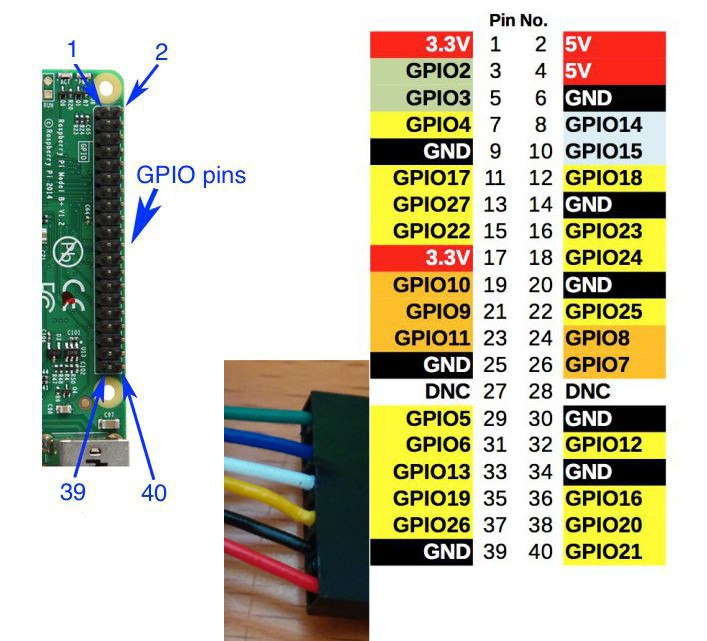
En este ejemplo, se utilizarán los pines 31, 33, 35, 37 y 39 (correspondientes a GPIO #6, GPIO #13, GPIO #19, GPIO #26 y GND), de la siguiente manera:
| JTAG ZXDOS+ | GPIO | Pin Raspberry Pi |
|---|---|---|
|
GPIO#6 |
|
|
GPIO#13 |
|
|
GPIO#19 |
|
|
GPIO#26 |
|
|
GND |
|
-
Copiar en la Raspberry Pi el fichero
recovery.zxd.bitobtenido anteriormente del repositorio oficial. En nuestro ejemplo, se dejará en/home/pi/zxdosplus/unbrick/
-
Para la conexión usando GPIO, realizar una copia del archivo de configuración de Open OCD, en el mismo lugar donde está
recovery.zxd.bit. Este paso no es necesario si se usa USB-Blaster.
cp /usr/local/share/openocd/scripts/interface/raspberrypi2-native.cfg /home/pi/zxdosplus/unbrick/-
Para la conexión vía GPIO, editar la copia de
raspberrypi2-native.cfgactualizandobcm2835gpio_jtag_nums(y descomentando, si fuera necesario), según como se haya hecho la conexión entre JTAG y GPIO en la líneabcm2835gpio_jtag_nums. En nuestro ejemplo:
# Header pin numbers: 37 31 33 35
bcm2835gpio_jtag_nums 26 6 13 19-
Comentar, si no lo está, la línea
bcm2835gpio_swd_nums(de nuevo, no necesario si la conexión es con USB-Blaster):
#bcm2835gpio_swd_nums 11 25-
Añadir, al final, la línea
adapter speed 250(no necesario para uso con USB-Blaster):
adapter speed 250-
Encender el ZXDOS+ o el gomaDOS+
-
Asegurarnos de que estamos en el directorio donde se encuentra el archivo
recovery.zxd.bit, y lanzar el comando que carga la BIOS en modo recuperación, indicando la ruta al archivoraspberrypi2-native.cfgque habíamos editado anteriormente.
Para conexión vía GPIO:
cd /home/pi/zxdosplus/unbrick
sudo openocd -f /home/pi/zxdosplus/unbrick/raspberrypi2-native.cfg -f /usr/local/share/openocd/scripts/cpld/xilinx-xc6s.cfg -c "init; xc6s_program xc6s.tap; pld load 0 recovery.zxd.bit ; exit"Con USB-Blaster:
sudo openocd -f /usr/local/share/openocd/scripts/interface/altera-usb-blaster.cfg -f /usr/local/share/openocd/scripts/cpld/xilinx-xc6s.cfg -c "init; xc6s_program xc6s.tap; pld load 0 recovery.zxd.bit ; exit"-
Si todo va bien, veremos cómo cambia el estado de los LED de la FPGA y veremos la imagen de la BIOS en el monitor.
En el caso de que no se vea imagen, pulsar Bloq. Despl. (Caps Shift+Symbol Shift+G en gomaDOS+): para cambiar entre modo de video compuesto y VGA, por si acaso la BIOS ha arrancado en un modo que no corresponde a la conexión del monitor.

-
Insertar en el ZXDOS+ la tarjeta microSD con la primera partición en formato FAT16 o FAT32, y en la que habremos copiado el fichero
FLASH.ZXDdescargado anteriormente. -
Si se está utilizando USB-Blaster, desconectar el cable.
-
Elegir la opción
Upgrade Flash from SD. Pulsar Enter, elegirYes, y pulsar Enter de nuevo para comenzar el proceso que graba de nuevo la Flash.
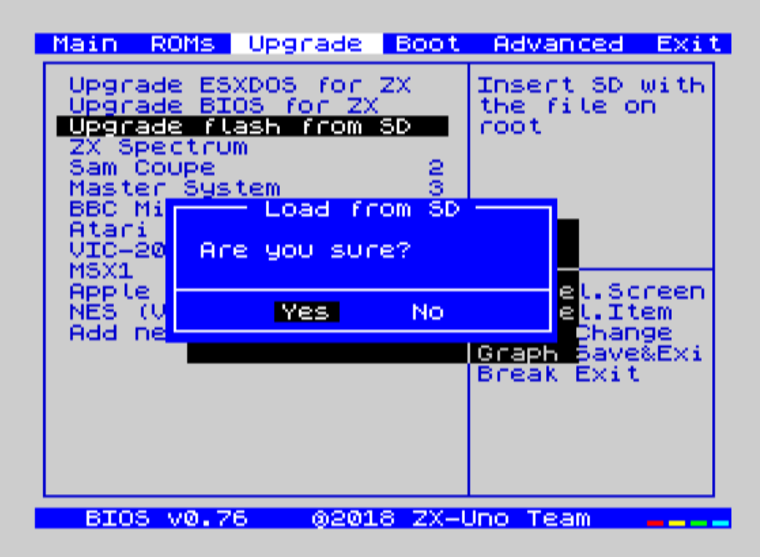
|
Este proceso sustituirá todos los cores instalados, la BIOS, así como las ROMs de ZX Spectrum y la configuración por lo que haya en la imagen, y no se puede deshacer. |
|
Habitualmente, la imagen de recuperación está configurada para usar un teclado PS/2 y no el teclado de membrana de Spectrum, así que, en el caso de gomaDOS+, puede que no funcionen las combinaciones como |
-
Tras unos minutos, el proceso finalizará, y podremos comprobar como, al apagar y encender, el ZXDOS+ (o el gomaDOS+) vuelve a arrancar correctamente.
|
Si no se obtiene imagen, pulsar de nuevo |
|
En el caso de gomaDOS+, como la configuración de la imagen de recuperación por defecto espera un teclado PS/2, se pueden seguir los siguientes pasos para configurar la BIOS correctamente:
|
Recuperación usando MacOS y Cable USB-Blaster
Material necesario:
-
Cable USB-Blaster preparado con las conexiones adecuadas para ZXDOS+
-
Imagen Flash y recovery para ZXDOS+ (LX25). Los mismos que se indican para Raspberry pi, del repositorio oficial, en este enlace
Software necesario:
-
Sistema MacOS
-
Carpeta data adicional para UrJTAG, obtenido desde aqui
-
UrJTAG: según las instrucciones de este enlace:
Pasos a seguir:
-
Preparar la instalación de UrJTAG
brew install libftdi libusb pkg-config
git clone https://github.com/C-Elegans/urjtag.git
cd urjtag-
Copiar la carpeta data adicional para UrJTAG, dentro de la carpeta data de urjtag.
-
Lanzar el proceso de compilacion:
./configure --with-libftdi --with-libusb --with-ftd2xx --with-inpout32 --enable-python=no
make -j4
sudo make install-
Copiar el archivo
FLASH.ZXDen la raiz de la tarjeta microSD para el ZXDOS+. -
Conectar el cable USB-Blaster al ZXDOS+ y al Mac
-
Encender el ZXDOS+ o el gomaDOS+
-
Asegurarnos de que estamos en el directorio donde se encuentra el archivo
recovery.zxd.bit, y lanzar el comandojtag.
-
Aparecerá una consola donde se han de escribir los comandos:
cable usbblaster
detect
pld load recovery.zxd.bit|
En el comando detect es importante que aparezca el dispositivo detectado. Puede que sea necesario lanzar el comando |

-
Si todo va bien, veremos cómo cambia el estado de los LED de la FPGA y veremos la imagen de la BIOS en el monitor.
En el caso de que no se vea imagen, pulsar Bloq. Despl. (Caps Shift+Symbol Shift+G en gomaDOS+): para cambiar entre modo de video compuesto y VGA, por si acaso la BIOS ha arrancado en un modo que no corresponde a la conexión del monitor.
-
Insertar en el ZXDOS+ la tarjeta microSD con la primera partición en formato FAT16 o FAT32, y en la que habremos copiado el fichero
FLASH.ZXDdescargado anteriormente. -
Desconectar el cable USB-Blaster.
-
Elegir la opción
Upgrade Flash from SD. Pulsar Enter, elegirYes, y pulsar Enter de nuevo para comenzar el proceso que graba de nuevo la Flash.
|
Este proceso sustituirá todos los cores instalados, la BIOS, así como las ROMs de ZX Spectrum y la configuración por lo que haya en la imagen, y no se puede deshacer. |
|
Habitualmente, la imagen de recuperación está configurada para usar un teclado PS/2 y no el teclado de membrana de Spectrum, así que, en el caso de gomaDOS+, puede que no funcionen las combinaciones como |
-
Tras unos minutos, el proceso finalizará, y podremos comprobar como, al apagar y encender, el ZXDOS+ (o el gomaDOS+) vuelve a arrancar correctamente.
|
Si no se obtiene imagen, pulsar de nuevo |
|
En el caso de gomaDOS+, como la configuración de la imagen de recuperación por defecto espera un teclado PS/2, se pueden seguir los siguientes pasos para configurar la BIOS correctamente:
|
|
En Linux, usando el mismo software UrJTAG, el proceso deberia ser similar, aunque en vez de instalar las dependencias (libftdi libusb pkg-config) mediante brew, se deberia hacer mediante apt, yum o similar |
Recuperación usando Windows y Cable USB-Blaster
Material necesario:
-
Cable USB-Blaster. <<preparado con las conexiones adecuadas para ZXDOS+
-
Imagen Flash y recovery para ZXDOS+ (LX25). Los mismos que se indican para Raspberry pi, del repositorio oficial, en este enlace
Software necesario:
-
Sistema Windows
-
Drivers de USB-Blaster para Windows, disponible en el foro de ZX-Uno
-
UrJTAG, para Windows, disponible en el repositorio oficial
Pasos a seguir:
-
Descomprimir el fichero ZIP con los drivers (obtenido en el foro de ZX-Uno)
-
Conectar el cable USB-Blaster al PC con Windows e instalar el driver eligiendo la opción de añadir ficheros manualmente y seleccionado la carpeta
driversque se ha obtenido al descomprimir el fichero anterior -
Descomprimir el software de UrJTAG, obtenido en el repositorio oficial
-
Copiar el archivo
FLASH.ZXDen la raiz de la tarjeta microSD para el ZXDOS+. -
Conectar el cable USB-Blaster al ZXDOS+ y al PC con Windows
-
Encender el ZXDOS+ o el gomaDOS+
-
Asegurarnos de que estamos en el directorio donde se encuentra el archivo
recovery.zxd.bit, y lanzarjtag.exe. -
Aparecerá una consola donde se han de escribir los comandos:
cable usbblaster
detect
pld load recovery.zxd.bit-
Si todo va bien, veremos cómo cambia el estado de los LED de la FPGA y veremos la imagen de la BIOS en el monitor.
En el caso de que no se vea imagen, pulsar Bloq. Despl. (Caps Shift+Symbol Shift+G en gomaDOS+): para cambiar entre modo de video compuesto y VGA, por si acaso la BIOS ha arrancado en un modo que no corresponde a la conexión del monitor.
-
Insertar en el ZXDOS+ la tarjeta microSD con la primera partición en formato FAT16 o FAT32, y en la que habremos copiado el fichero
FLASH.ZXDdescargado anteriormente. -
Desconectar el cable USB-Blaster.
-
Elegir la opción
Upgrade Flash from SD. Pulsar Enter, elegirYes, y pulsar Enter de nuevo para comenzar el proceso que graba de nuevo la Flash.
|
Este proceso sustituirá todos los cores instalados, la BIOS, así como las ROMs de ZX Spectrum y la configuración por lo que haya en la imagen, y no se puede deshacer. |
|
Habitualmente, la imagen de recuperación está configurada para usar un teclado PS/2 y no el teclado de membrana de Spectrum, así que, en el caso de gomaDOS+, puede que no funcionen las combinaciones como |
-
Tras unos minutos, el proceso finalizará, y podremos comprobar como, al apagar y encender, el ZXDOS+ (o el gomaDOS+) vuelve a arrancar correctamente.
|
Si no se obtiene imagen, pulsar de nuevo |
|
En el caso de gomaDOS+, como la configuración de la imagen de recuperación por defecto espera un teclado PS/2, se pueden seguir los siguientes pasos para configurar la BIOS correctamente:
|